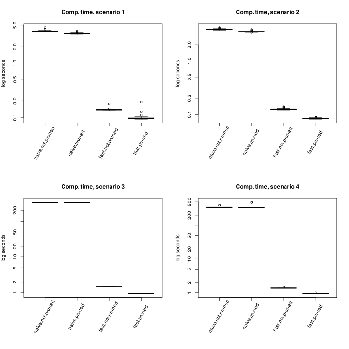
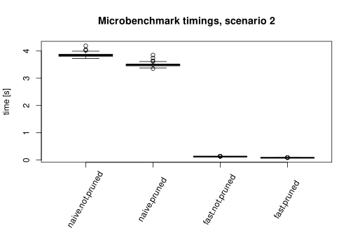
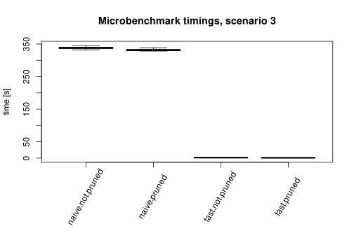
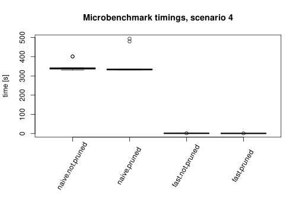

![]()
| expr | min | lq | mean | median | uq | max | neval |
|---|---|---|---|---|---|---|---|
| naive.not.pruned | 3.6924007 | 3.7943906 | 3.8521256 | 3.8386487 | 3.8780412 | 4.5247099 | 100 |
| naive.pruned | 3.2822354 | 3.4126177 | 3.4758338 | 3.4614076 | 3.5061541 | 3.8822089 | 100 |
| fast.not.pruned | 0.1332744 | 0.1367000 | 0.1383806 | 0.1385039 | 0.1392707 | 0.1768691 | 100 |
| fast.pruned | 0.0921422 | 0.0945472 | 0.0974025 | 0.0954231 | 0.0978687 | 0.1908498 | 100 |
1 Introduction
Multiple testing theory is often used for exploratory analysis, like Genome-Wide Association Studies, where multiple features are tested to find promising ones. Classical multiple testing theory like Family-Wise Error Rate (FWER) control or False Discovery Rate (FDR) control (Benjamini and Hochberg 1995) can be used, but a more recent trend consists in the computation of post hoc bounds, also named post selection bounds or confidence envelopes, for the number of false positives, or, equivalently, for the False Discovery Proportion (FDP). This approach is notably advocated for in the context of exploratory research by (Goeman and Solari 2011, sec. 1).
Mathematically speaking, a confidence upper bound (we prefer to say upper bound instead of envelope for obvious reasons) is a function \(\widehat V: \mathcal{P}(\mathbb{N}_m^*) \to \mathbb{N}_m\), where \(\mathbb{N}_m=\{0,\dotsc,m\}\), \(\mathbb{N}_m^*=\{1,\dotsc,m\}\) and \(m\) is the number of hypotheses, such that \[\begin{equation} \forall \alpha \in ]0,1[, \mathbb{P}\left(\forall S \subseteq \mathbb{N}_m^*, |S\cap \mathcal{H}_0|\leq \widehat V(S)\right)\geq 1-\alpha. \label{eq_confidence} \end{equation}\] Here, \(\alpha\) is a target error rate and \(\mathcal{H}_0\) is the set of hypotheses indices that are true null hypotheses. Note that the construction of \(\widehat V\) depends on \(\alpha\) and on the random data \(X\) and the dependence is omitted to lighten notation and because there is no ambiguity. The meaning of Equation \(\eqref{eq_confidence}\) is that \(\widehat V\) provides an upper bound of the number of null hypotheses in \(S\) for any selection set \(S\subseteq \mathbb{N}_m^*\), which allows the user to perform post hoc selection on their data without breaching the statistical guarantee. Also note that by dividing by \(|S|\vee 1\) in Equation \(\eqref{eq_confidence}\) we also get a confidence bound for the FDP: \[\begin{equation} \forall \alpha \in ]0,1[, \mathbb{P}\left(\forall S \subseteq \mathbb{N}_m^*, \mathrm{FDP}(S)\leq \frac{\widehat V(S)}{|S|\vee 1}\right)\geq 1-\alpha. \label{eq_confidence_fdp} \end{equation}\] So post hoc bounds provide ways to construct FDP-controlling sets instead of FDR-controlling sets, which is much more desirable given the nature of the FDR as an expected value. See for example (Bogdan et al. 2015, fig. 4) for a credible example where the FDR is controlled but the FDP has a highly undesirable behavior (either 0 because no discoveries at all are made, either higher than the target level).
The first confidence bounds are found in Genovese and Wasserman (2006) and Meinshausen (2006), although, in the latter, only for selection sets of the form \(\{i\in\mathbb{N}_m: P_i\leq t\}\) where \(P_i\) is the \(p\)-value associated to the null hypothesis \(H_{0,i}\). In Goeman and Solari (2011) the authors re-wrote the generic construction of Genovese and Wasserman (2006) in terms of closed testing Marcus, Peritz, and Gabriel (1976), proposed several practical constructions and sparked a new interest in multiple testing procedures based on confidence envelopes. This work was followed by a prolific series of works like Meijer, Krebs, and Goeman (2015) or Vesely, Finos, and Goeman (2023). In Blanchard, Neuvial, and Roquain (2020), the authors introduce the new point of view of references families (see Section 2.2) to construct post hoc bounds, and show the links between this meta-technique and the closed testing one, along with new bounds.
Following the reference family trail, in Durand et al. (2020) the authors introduce new reference families with a special set-theoretic constraint that allows an efficient computation of the bound denoted by \(V^*_{\mathfrak{R}}\) on a single selection set \(S\). The problem is that one often wants to compute \(V^*_{\mathfrak{R}}\) on a whole path of selection sets \((S_t)_{t\in\mathbb{N}_m^*}\), for example the hypotheses attached to the \(t\) smallest \(p\)-values. Whereas the algorithm provided in the aforementioned work (Durand et al. 2020, Algorithm 1), which is reproduced here, see Algorithm 1, is fast for a single evaluation, it is slow and inefficient to repeatedly call it to compute each \(V^*_{\mathfrak{R}}(S_t)\). If the \(S_t\)’s are nested, and growing by one, that is \(S_1\subsetneq\dotsb\subsetneq S_m\) and \(|S_t|=t\), there is a way to efficiently compute \(\left(V^*_{\mathfrak{R}}(S_t)\right)_{t\in\mathbb{N}_m}\) by leveraging the nested structure.
This is the main contribution of the present paper: a new and fast algorithm computing the curve \(\left(V^*_{\mathfrak{R}}(S_t)\right)_{t\in\mathbb{N}_m}\) for a nested path of selection sets, that is presented in Section 3.2. An additional algorithm that can speed up computations both for the single-evaluation algorithm and the new curve-evaluation algorithm is also presented, in Section 3.1. In Section 2.1, all necessary notation and vocabulary is re-introduced, most of it being the same as in Durand et al. (2020). In Section 4 we discuss the current implementations of all the presented algorithms in the R (R Core Team 2024) package sanssouci (Neuvial et al. 2024). Finally, a few numerical experiments are presented in Section Section 5 to demonstrate the computation time gain.
2 Notation and reference family methodology
2.1 Multiple testing notation
As is usual in multiple testing theory, we consider a probability space \((\Omega,\mathcal A, \mathbb P)\), a model \(\mathcal{P}\) on a measurable space \((\mathcal{X},\mathfrak{X})\), and data that is represented by a random variable \(X:(\Omega,\mathcal A)\to(\mathcal{X},\mathfrak{X})\) with \(X\sim P\in \mathcal{P}\), that is, the law of \(X\) is comprised in the model \(\mathcal{P}\).
Then we consider \(m\geq1\) null hypotheses \(H_{0,1}, \dotsc, H_{0,m}\) which formally are submodels, that is subsets of \(\mathcal{P}\). The associated alternative hypotheses \(H_{1,1}, \dotsc, H_{1,m}\) are submodels such that \(H_{0,i}\cap H_{1,i}=\varnothing\) for all \(i\in\mathbb{N}_m^*\). We denote by \(\mathcal{H}_0=\mathcal{H}_0(P)\) (the dependence in \(P\) will be dropped when there is no ambiguity) the set of all null hypotheses that are true, that is \(\mathcal{H}_0(P)=\{i\in\mathbb{N}_m^* : P\in H_{0,i}\}\). In other words, \(H_{0,i}\) is true if and only if \(i\in\mathcal{H}_0\). For testing each \(H_{0,i}, i\in\mathbb{N}_m^*\), we have at hand a \(p\)-value \(p_i=p_i(X)\) (the dependence in \(X\) will be dropped when there is no ambiguity) which is a random variable with the following property : if \(i\in\mathcal{H}_0\), then the law of \(p_i\) is super-uniform, which is sometimes denoted \(\mathcal L(p_i)\succeq \mathcal{U}([0,1])\). This means that in such case, the cumulative distribution function (cdf) of \(p_i\) is always smaller than or equal to the cdf of a random variable \(U\sim \mathcal{U}([0,1])\) : \[\begin{equation} \forall x \in \mathbb{R}, \mathbb{P}\left(p_i\leq x\right)\leq \mathbb{P}\left(U\leq x\right) = 0\vee(x\wedge 1). \label{eq_super_unif} \end{equation}\]
For every subset of hypotheses \(S\subseteq\mathbb{N}_m^*\), let \(V(S)=|S\cap\mathcal{H}_0|\). If we think of \(S\) as a selection set of hypotheses deemed significant, \(V(S)\) is then the number of false positives (FP) in \(S\). \(V(S)\) is our main object of interest and the quantity that we wish to over-estimate with confidence upper bounds (see Equation \(\eqref{eq_confidence}\) or the more formal Equation \(\eqref{eq_confidence_formal}\) below).
Finally let us consider the following toy example, that will be re-used in the remainder of the paper.
Example 1 (Gaussian one-sided) In this case we assume that \(X=(X_1,\dotsc,X_m)\) is a Gaussian vector and the null hypotheses refer to the nullity of the means in contrast to their positivity. That is, formally, \((\mathcal{X},\mathfrak{X})=(\mathbb R^m, \mathcal B\left(\mathbb R^m \right))\), \(\mathcal P=\{ \mathcal N(\boldsymbol{\mu}, \Sigma) : \forall j \in\mathbb{N}_m^*, \mu_j\geq 0, \Sigma \text{ positive semidefinite} \}\), for each \(i\in\mathbb{N}_m^*\), \(H_{0,i}= \{ \mathcal N(\boldsymbol{\mu}, \Sigma) \in \mathcal P :\mu_i=0 \}\) and \(H_{1,i}=\{ \mathcal N(\boldsymbol{\mu}, \Sigma) \in \mathcal P :\mu_i>0 \}\). Then we can construct \(p\)-values by letting \(p_i(X)=\bar\Phi(X_i)=1-\Phi(X_i)\), where \(\Phi\) denotes the cdf of \(\mathcal N(0,1)\) and \(\bar\Phi\) the associated survival function.
2.2 Post hoc bounds with reference families
With the formalism introduced in last section, a confidence upper bound is a functional \(\widehat V:\mathcal X\times ]0,1[\to(\mathcal P(\mathbb{N}_m^*) \to \mathbb{N}_m)\) such that, \[\begin{equation} \forall P\in\mathcal P, \forall X\sim P, \forall \alpha \in ]0,1[, \mathbb{P}\left(\forall S \subseteq \mathbb{N}_m^*, V(S)\leq \widehat V(X,\alpha)(S)\right)\geq 1-\alpha. \label{eq_confidence_formal} \end{equation}\] In the remainder, the dependence in \((X,\alpha)\) will be dropped when there is no ambiguity and \(\widehat V(X,\alpha)\) will simply be written \(\widehat V\).
As said in the Introduction, many constructions, ultimately theoretically equivalent but differing by the practical steps involved, exist, and in this paper we focus on the meta-construction of Blanchard, Neuvial, and Roquain (2020) based on reference families. A reference family is a family \(\mathfrak{R}=\mathfrak{R}(X,\alpha)=(R_k,\zeta_k)_{k\in \mathcal K}\) with \(|\mathcal K|\leq 2^m\), \(R_k\subseteq\mathbb{N}_m^*\), \(\zeta_k\in\left\{0,\dotsc,|R_k|\right\}\) where everything (that is, \(\mathcal K\) and all the \(R_k\) and \(\zeta_k\)) depends on \((X,\alpha)\) but the dependency is not explicitly written. The \(R_k\) are all distinct. We also define the following error criterion for a reference family, named Joint Error Rate (JER): \[\begin{equation} \mathrm{JER}(\mathfrak{R}) = \mathbb{P}\left(\exists k\in\mathcal K, |R_k\cap\mathcal{H}_0| > \zeta_k \right) = \mathbb{P}\left(\exists k\in\mathcal K, V(R_k) > \zeta_k \right). \label{eq_jer} \end{equation}\] In the following, we are only interested in reference families that control the JER at level \(\alpha\): \[\begin{equation} \forall P\in\mathcal P, \forall X\sim P, \forall \alpha \in ]0,1[, 1-\mathrm{JER}(\mathfrak{R}(X,\alpha))=\mathbb{P}\left(\forall k\in\mathcal K, V(R_k)\leq \zeta_k\right) \geq 1-\alpha. \label{eq_jer_control} \end{equation}\] Note that Equation \(\eqref{eq_jer_control}\) is really similar to Equation \(\eqref{eq_confidence_formal}\) except that the uniform guarantee, instead of being over all \(S\subseteq \mathbb{N}_m^*\), is only over all the \(R_k\subseteq \mathbb{N}_m^*, k\in\mathcal K\), with \(\mathcal K\) having cardinality potentially much smaller than \(2^m\). A global confidence bound is then derived from a JER-controlling reference family by interpolation. Let \[\begin{equation} \mathcal A(\mathfrak{R})= \left\{A\subseteq \mathbb{N}_m^*: \forall k\in\mathcal K, |R_k\cap A| \leq \zeta_k \right\}. \label{eq_a} \end{equation}\] What says the JER control is that \(\mathcal{H}_0\in\mathcal A(\mathfrak{R})\). We leverage this information with the following confidence bound construction: \[\begin{equation} V^*_{\mathfrak{R}}(S) = \max_{A\in\mathcal A(\mathfrak{R})}|S\cap A| \label{eq-vstar} \end{equation}\] which optimally uses the information provided by the JER control of the reference family, as proven by Proposition 2.1 of Blanchard, Neuvial, and Roquain (2020). Because of the \(\max_{A\in\mathcal A(\mathfrak{R})}\), the computation of \(V^*_{\mathfrak{R}}(S)\) is generally intractable (see Proposition 2.2 of Blanchard, Neuvial, and Roquain (2020)), but for specific structures of reference families, a polynomial computation can be derived. This is the topic of Durand et al. (2020) and of next section.
2.3 Regions with a forest structure
The core concept of this section is to assume that the regions \(R_k\)’s of the reference family are what we called in Durand et al. (2020) a forest structure, that is two regions are either disjoint or nested: \[\begin{equation} \forall k,k'\in\mathcal{K} , R_k \cap R_{k'} \in \{ R_k, R_{k'} , \varnothing \}. \label{eq-forest} \end{equation}\] Representing the \(R_k\)’s with a directed graph, where there is an oriented edge \(R_k \leftarrow R_{k'}\) if and only if \(R_k \subset R_{k'}\) and there is no \(R_{k''}\) such that \(R_k \subsetneq R_{k''}\subsetneq R_{k'}\) gives a forest, hence the name. See Example 2 and its representation in Figure 1.
We also need to introduce the notion of depth with the following function: \[\begin{equation} \phi \: : \: \left\{ \begin{array}{l c l } \mathcal{K}& \to & \mathbb{N}^*\\ k & \mapsto & 1 + \left| \{k'\in\mathcal{K}: R_k\subsetneq R_{k'} \} \right| . \end{array} \right. \label{eq-depth} \end{equation}\]
Example 2 Let \(m=25\), \(R_1 = \{1, \dotsc , 20 \}\), \(R_2 = \{1, 2 \}\), \(R_3 = \{3 , \dotsc , 10 \}\), \(R_4 = \{11, \dotsc , 20 \}\), \(R_5 = \{5, \dotsc , 10 \}\), \(R_6 = \{11, \dotsc , 16 \}\), \(R_7 = \{17, \dotsc ,20 \}\), \(R_8=\{21,22\}\), \(R_9 = \{22\}\). This is the same example as Example 2 of Durand et al. (2020) and it is graphically depicted in Figure 1. The sets \(R_1\), \(R_8\) are of depth \(1\); the sets \(R_2,R_3,R_4,R_9\) are of depth \(2\); the sets \(R_5,R_6,R_7\) are of depth \(3\).
%%| filename: ../figure-tikz/fig-tikz-01
\begin{tikzpicture}[scale=0.85]
\tikzstyle{quadri}=[circle,draw,text=black, thick]
\tikzstyle{estun}=[->,>=latex,very thick]
\node[quadri] (R1) at (0,3) {$R_1$};
\node[quadri] (R2) at (-2,1) {$R_2$};
\node[quadri] (R3) at (0,1) {$R_3$};
\node[quadri] (R4) at (2,1) {$R_4$};
\node[quadri] (R5) at (0,-1) {$R_5$};
\node[quadri] (R6) at (1.5,-1) {$R_6$};
\node[quadri] (R7) at (2.5,-1) {$R_7$};
\node[quadri] (R8) at (4,3) {$R_8$};
\node[quadri] (R9) at (4,1) {$R_9$};
\draw[estun] (R1)--(R2);
\draw[estun] (R1)--(R3);
\draw[estun] (R1)--(R4);
\draw[estun] (R3)--(R5);
\draw[estun] (R4)--(R6);
\draw[estun] (R4)--(R7);
\draw[estun] (R8)--(R9);
\end{tikzpicture}Another tool of Durand et al. (2020) that will be used is its Lemma 2, that is the identification of \(\mathfrak{R}\) with a set \(\mathcal C\subset \left\{(i,j)\in \left({\mathbb N_N}^*\right)^2 \: : i\leq j\right\}\) such that for \((i,j), (i',j')\in\mathcal C\), \(\{i,\dotsc, j\}\cap\{i',\dotsc,j'\}\in\left\{\varnothing, \{i,\dotsc, j\},\{i',\dotsc j'\} \right\}\). With this identification, each \(R_k=R_{(i,j)}\) can be written as \(P_{i:j}=\bigcup_{i\leq n\leq j}P_n\) where \((P_n)_{1\leq n \leq N}\) is a partition of \(\mathbb{N}_m^*\). The \(P_n\)’s were called atoms in Durand et al. (2020) because they have the thinnest granularity in the structure, but to continue the analogy with graphs, forests and trees, they can also be called leafs. See Example 3 for a concrete example.
Example 3 (Continuation of Example 2) For the reference family given in Example 2, a partition of atoms is given by \(P_1 =R_2\), \(P_2 = R_3\setminus R_5\), \(P_3 = R_5\), \(P_4=R_6\), \(P_5=R_7\), \(P_6=R_8\setminus R_9\), \(P_7=R_9\), \(P_8=\mathbb{N}_m^* \setminus \{R_1 \cup R_8 \}\). Then \(R_1=P_{1:5}\), \(R_3=P_{2:3}\), \(R_4=P_{4:5}\) and \(R_8=P_{6:7}\). Note that not all atoms are regions of the family. Those new labels are graphically depicted in Figure 2. The nodes that correspond to atoms that are not in the family are depicted with a dashed circle, and all atoms are depicted in gray. This is the same example as Example 3 of Durand et al. (2020).
%%| filename: ../figure-tikz/fig-tikz-02
\begin{tikzpicture}[scale=0.85]
\tikzstyle{quadri}=[circle,draw,text=black,thick]
\tikzstyle{estun}=[->,>=latex,very thick]
\node[quadri] (R1) at (0,3) {$P_{1:5}$};
\node[quadri, fill=gray!25] (R2) at (-2,1) {$P_1$};
\node[quadri] (R3) at (0,1) {$P_{2:3}$};
\node[quadri] (R4) at (2,1) {$P_{4:5}$};
\node[quadri, dashed,fill=gray!25] (P2) at (-0.5,-1) {$P_2$};
\node[quadri,fill=gray!25] (R5) at (0.5,-1) {$P_3$};
\node[quadri,fill=gray!25] (R6) at (1.5,-1) {$P_4$};
\node[quadri,fill=gray!25] (R7) at (2.5,-1) {$P_5$};
\node[quadri] (R8) at (4,3) {$P_{6:7}$};
\node[quadri,dashed,fill=gray!25] (P6) at (3.5,1) {$P_6$};
\node[quadri,fill=gray!25] (R9) at (4.5,1) {$P_7$};
\node[quadri,dashed,fill=gray!25] (P8) at (6,3) {$P_8$};
\draw[estun] (R1)--(R2);
\draw[estun] (R1)--(R3);
\draw[estun] (R1)--(R4);
\draw[estun] (R3)--(R5);
\draw[estun,dashed,thick] (R3)--(P2);
\draw[estun] (R4)--(R6);
\draw[estun] (R4)--(R7);
\draw[estun] (R8)--(R9);
\draw[estun,dashed,thick] (R8)--(P6);
\end{tikzpicture}When all leaves are regions of the family, it is said that the family is complete. If this is not the case, the family can easily be completed by adding the missing leaves (and using their cardinality as associated \(\zeta\)) without changing the value \(V^*_{\mathfrak{R}}\). See Definition 2, Lemma 6 and Algorithm 2 of Durand et al. (2020) for the details.
Durand et al. (2020) also proved in their Theorem 1 that: \[\begin{equation} V^*_{\mathfrak{R}}(S)=\min_{Q\subseteq\mathcal{K}}\left(\sum_{k'\in Q}\zeta_{k'}\wedge|S\cap R_{k'}|+\left| S\setminus\bigcup_{k'\in Q} R_{k'} \right|\right) \label{eq_vstar_Q} \end{equation}\] and, even better, in their Corollary 1 (iii) that: \[\begin{equation} V^*_{\mathfrak{R}}(S) = \min_{Q\in \mathfrak P}\sum_{k'\in Q}\zeta_{k'}\wedge|S\cap R_{k'}|, \label{eq_vstar_Qpartition} \end{equation}\] provided that the family is complete. Here, \(\mathfrak P \subseteq \mathcal P(\mathcal{K})\) is the set of subsets of \(\mathcal{K}\) that realize a partition, that is, the set of \(Q\subseteq\mathcal{K}\) such that the \(R_k\), \(k\in Q\), form a partition of \(\mathbb{N}_m^*\). So the minimum in Equation \(\eqref{eq_vstar_Qpartition}\) is over way less elements than in Equation \(\eqref{eq_vstar_Q}\).
Finally, that paper provides a polynomial algorithm to \(V^*_{\mathfrak{R}}(S)\) for a single \(S\subseteq\mathbb{N}_m^*\), which we reproduce here in Algorithm 1. The family is assumed complete, otherwise the first step would be to complete it. In the original paper, \(\mathcal{K}^h\) used to designate the elements of \(\mathcal{K}\) at depth \(h\) plus the atoms at depth \(\leq h\). Actually one can realize that the last assumption is not needed for this algorithm to perform exactly the same, with the added benefit of not repeating computations at the atoms that don’t have the maximal depth. The only change is that sometimes \(Succ_k\) can be empty, in which case we simply let \(newVec_k=\zeta_k\wedge|S\cap R_k|\). Thus, here in this paper, we define \(\mathcal{K}^h\) as only the elements of \(\mathcal{K}\) at depth \(h\) (the previous intricate definition may still be necessary for the proof of Theorem 1 of Durand et al. (2020)): \(\mathcal{K}^h=\{ (i,j)\in\mathcal{K}: \phi(i,j)=h \}, \:\:\:h\geq 1.\) This is the only deviation from the notation of Durand et al. (2020). Finally note that in the ongoing analogy with graph theory, the elements of \(\mathcal{K}^1\) are the roots of the different trees making up the forest.
\begin{algorithm} \caption{Computation of a given $V^*_{\mathfrak{R}}(S)$} \begin{algorithmic} \Procedure{Vstar}{S, $\mathfrak{R}=(R_{k},\zeta_{k})_{k\in\mathcal{K}}$ with $\mathfrak{R}$ complete} \State $ H \gets \max_{k\in\mathcal{K}} \phi(k) $ \Comment{maximum depth} \For{$h = H-1, \dotsc, 1$} \State $\mathcal{K}^h\gets \{ k\in\mathcal{K} : \phi(k) =h \}$ \State $newVec\gets (0)_{k \in \mathcal{K}^h}$ \For{$k \in \mathcal{K}^h$} \State $Succ_k \gets \{ k' \in \mathcal{K}^{h+1} : R_{k'}\subseteq R_k\}$ \If{$Succ_k=\varnothing$} \State $newVec_k \gets \zeta_k\wedge|S\cap R_k|$ \Else \State $newVec_k \gets \min\left( \zeta_{k}\wedge|S\cap R_k| , \sum_{k'\in Succ_k} Vec_{k'} \right)$ \EndIf \EndFor \State $Vec\gets newVec$ \EndFor \Return $\sum_{k\in\mathcal{K}^1} Vec_k $ \EndProcedure \end{algorithmic} \end{algorithm}
Tip
In the practical implementation of this algorithm (and of the following Algorithm 2), \(Vec\) and \(newVec\) are always of size \(N\) (the number of leaves) instead of the cardinality of \(\mathcal{K}^h\). And the sum \(\sum_{k'\in Succ_k} Vec_{k'}\) is really easy to compute: if \(R_k= R_{(i_0,i_{p}-1)}= \bigcup_{ j=1}^{p} R_{(i_{ j-1}, i_{ j}-1)}=\bigcup_{i_0\leq n\leq i_{p}-1}P_n\in\mathcal{K}^h\) for some \(p\geq2\), a strictly increasing sequence \((i_0,\dotsc,i_{p})\) and \(R_{(i_{ j-1}, i_{ j}-1)}\in\mathcal{K}^{h+1}\) for all \(1\leq j\leq p\), then we simply sum \(Vec\) over the indices from \(i_{0}\) to \(i_{p}-1\). After that, the computed quantity is set in \(newVec\) at index \(i_0\). So actually computing \(Succ_k\) is not needed and not done.
The computation time of the algorithm is in \(O(m|\mathcal{K}|)\), which is fast for a single evaluation, but calling it repeatedly on a path of selection sets \((S_t)_{t\in\mathbb{N}_m^*}\) has complexity \(O(m^2|\mathcal{K}|)\) which is not desirable and makes computations difficult in practice, hence the need for a new, faster algorithm.
Remark 1. The specific computation of the \(R_k\)’s and the \(\zeta_k\)’s such that Equation \(\eqref{eq_jer_control}\) holds is outside the scope of the present paper, but different constructions can be found in Blanchard, Neuvial, and Roquain (2020), Durand et al. (2020) or Blain, Thirion, and Neuvial (2022) for example.
3 New algorithms
3.1 Pruning the forest
We remark the simple fact that if, for example, \((1,1), (2,2), (1,2)\in\mathcal{K}\), and \(\zeta_{(1,2)}\geq \zeta_{(1,1)}+\zeta_{(2,2)}\), then \(R_{(1,2)}\) never contributes to the computation of any \(V^*_{\mathfrak{R}}(S)\) and it could just be removed from \(\mathfrak{R}\). We now formalize and prove this pruning scheme.
Definition 1 (Pruning) We define by \(\mathcal{K}^{\mathfrak{pr}}\) (\(\mathcal{K}\) pruned) the set of elements of \(\mathcal{K}\) such that we removed all \((i,i')\) such that there exists \(p\geq2\) and integers \(i_1,\dotsc,i_{p-1}\) such that, when setting \(i_0=i\) and \(i_{p}=i'+1\), the sequence \((i_0,\dotsc,i_{p})\) is strictly increasing, \((i_{j-1},i_{j}-1)\in\mathcal{K}\) for all \(1\leq j\leq p\) and finally \(\zeta_{(i,i')}=\zeta_{(i_0,i_{p}-1)}\geq \sum_{j=1}^{p} \zeta_{(i_{j-1}, i_{j}-1)}\).
An important note is that for a removed \((i,i')\in\mathcal{K}\setminus\mathcal{K}^{\mathfrak{pr}}\), we can always choose the indices \(i_1,\dotsc,i_{p-1}\) such that actually \((i_j,i_{j+1}-1)\in\mathcal{K}^{\mathfrak{pr}}\) and not only \(\mathcal{K}\), because if \((i_j,i_{j+1}-1)\in\mathcal{K}\setminus\mathcal{K}^{\mathfrak{pr}}\) it can itself be fragmented, and this decreasing recursion eventually ends (the later possible being at the atoms of the forest structure). Also note that removing elements from \(\mathcal{K}\) does not alter the fact that we have at hand a forest structure, that is, the reference family defined by \(\mathfrak{R}^{\mathfrak{pr}}=(R_k,\zeta_k)_{k\in\mathcal{K}^{\mathfrak{pr}}}\) has a forest structure. Because pruning a forest structure does not touch the atoms, note finally that if \(\mathcal{K}\) is complete then so is \(\mathcal{K}^{\mathfrak{pr}}\).
The following proposition states that pruning the forest does not alter the bound.
Proposition 1 For any \(S\subseteq \mathbb{N}_m^*\), \(V^*_{\mathfrak{R}}(S)=V^*_{\mathfrak{R}^{\mathfrak{pr}}}(S)\).
Proof. Recall Equation \(\eqref{eq_vstar_Q}\) and, because \(\mathfrak{R}^{\mathfrak{pr}}\) also has a forest structure, \[\begin{equation} V^*_{\mathfrak{R}^{\mathfrak{pr}}}(S)=\min_{Q\subseteq\mathcal{K}^{\mathfrak{pr}}}\left(\sum_{k'\in Q}\zeta_{k'}\wedge|S\cap R_{k'}|+\left| S\setminus\bigcup_{k'\in Q} R_{k'} \right|\right), \label{eq_vstarpruned_Q} \end{equation}\] so we immediately get that \(V^*_{\mathfrak{R}}(S)\leq V^*_{\mathfrak{R}^{\mathfrak{pr}}}(S)\).
Let any \(Q\subseteq \mathcal{K}\). We split \(Q\) in \(A\) elements of \(\mathcal{K}\setminus\mathcal{K}^{\mathfrak{pr}}\), denoted \((i_{0,a}, i_{p_a,a}-1)\), \(1\leq a\leq A\) for some \(p_a\geq2\), and \(B\) elements of \(\mathcal{K}^{\mathfrak{pr}}\), simply denoted \(k_b\), \(1\leq b\leq B\). By the definition of \(\mathcal{K}^{\mathfrak{pr}}\) and the previous remarks, for any \(1\leq a \leq A\), there exist integers \(i_{1,a},\dotsc,i_{p_a-1,a}\) such that \(i_{0,a}<i_{1,a}<\dotsb<i_{p_a-1,a} < i_{p_a,a}\), \((i_{j-1,a},i_{j,a}-1)\in\mathcal{K}^{\mathfrak{pr}}\) for all \(1\leq j\leq p_a\), and \(\zeta_{(i_{0,a}, i_{p_a,a}-1)}\geq \sum_{j=1}^{p_a}\zeta_{(i_{j-1,a},i_{j,a}-1)}\). Now let \[\begin{equation} Q^{\mathfrak{pr}}=\{k_b : 1\leq b\leq B \} \cup \{ (i_{j-1,a},i_{j,a}-1) : 1\leq a\leq A, 1\leq j\leq p_a \}. \label{eq_Qpr} \end{equation}\] We have that \(Q^{\mathfrak{pr}}\subseteq \mathcal{K}^{\mathfrak{pr}}\) and \(\bigcup_{k\in Q}R_k=\bigcup_{k\in Q^{\mathfrak{pr}}}R_k\). Then, \[\begin{align*} \sum_{k\in Q}\zeta_k\wedge|S\cap R_k|+\left| S\setminus\bigcup_{k\in Q} R_k \right|&=\sum_{b=1}^B\zeta_{k_b}\wedge|S\cap R_{k_b}| \\ &\qquad+\sum_{a=1}^A\zeta_{(i_{0,a}, i_{p_a,a}-1)}\wedge |S\cap R_{(i_{0,a}, i_{p_a,a}-1)}| \\ &\qquad+ \left| S\setminus\bigcup_{k\in Q} R_k \right| , \end{align*}\] but for all \(1\leq a\leq A\), \[\begin{align*} \zeta_{(i_{0,a}, i_{p_a,a}-1)}&\geq \sum_{j=1}^{p_a}\zeta_{(i_{j-1,a},i_{j,a}-1)} \\ &\geq \sum_{j=1}^{p_a}\zeta_{(i_{j-1,a},i_{j,a}-1)} \wedge |S\cap R_{(i_{j-1,a}, i_{j,a}-1)}| , \end{align*}\] so the term \(\sum_{a=1}^A\zeta_{(i_{0,a}, i_{p_a,a}-1)}\wedge |S\cap R_{(i_{0,a}, i_{p_a,a}-1)}|\) is greater than or equal to \[\begin{equation*} \sum_{a=1}^A\left( \sum_{j=1}^{p_a}\zeta_{(i_{j-1,a},i_{j,a}-1)} \wedge |S\cap R_{(i_{j-1,a}, i_{j,a}-1)}| \right)\wedge |S\cap R_{(i_{0,a}, i_{p_a,a}-1)}| , \end{equation*}\] which is simply equal to \[\begin{equation*} \sum_{a=1}^A \sum_{j=1}^{p_a}\zeta_{(i_{j-1,a},i_{j,a}-1)} \wedge |S\cap R_{(i_{j-1,a}, i_{j,a}-1)}|. \end{equation*}\] Furthermore \(\left|S\setminus\bigcup_{k\in Q} R_k\right|= \left|S\setminus\bigcup_{k\in Q^{\mathfrak{pr}}} R_k\right|\) so finally: \[\begin{align} \sum_{k\in Q}\zeta_k\wedge|S\cap R_k|+\left| S\setminus\bigcup_{k\in Q} R_k \right| &\geq \sum_{k\in Q^{\mathfrak{pr}}}\zeta_k\wedge|S\cap R_k|+\left| S\setminus\bigcup_{k\in Q^{\mathfrak{pr}}} R_k \right| \label{pruning_ineq}\\ &\geq V^*_{\mathfrak{R}^{\mathfrak{pr}}}(S). \notag \end{align}\] Note that Equation \(\eqref{pruning_ineq}\) is true even if there are some \(b\in\{ 1,\dotsc,B\}, a\in\{ 1,\dotsc,A\}, j\in\{ 1,\dotsc,p_a\}\) such that \(k_b=(i_{j-1,a}, i_{j,a}-1)\). We minimize over all \(Q\) to get that \(V^*_{\mathfrak{R}}(S)\geq V^*_{\mathfrak{R}^{\mathfrak{pr}}}(S)\). \(\square\)
This gives a practical way to speed up computations by first pruning the family before computing any \(V^*_{\mathfrak{R}}(S)\), because \(\mathcal{K}^{\mathfrak{pr}}\) is smaller than \(\mathcal{K}\), and by the above Proposition there is no theoretical loss in doing so.
Furthermore, pruning can be done really simply by following Algorithm 1 for \(S=\mathbb{N}_m^*\), and pruning when appropriate. This gives the following Algorithm 2, assuming, for simplicity, that the family is complete. The computation time of the algorithm is the same as Algorithm 1, that is \(O(m|\mathcal{K}|)\). Note that the only differences between Algorithm 2 and Algorithm 1 are the pruning step and \(\zeta_k\) replacing \(\zeta_k\wedge|S\cap R_k|\), because \(\zeta_k\leq|R_k|\) and here \(S=\mathbb{N}_m^*\), so \(\zeta_k\wedge|\mathbb{N}_m^*\cap R_k|=\zeta_k\). Also note that the algorithm returns \(V^*_{\mathfrak{R}}(\mathbb{N}_m^*)\) as a by-product. The following proposition states that Algorithm 2 indeed produces the pruned region as in Definition 1.
\begin{algorithm} \caption{Pruning of $\mathfrak{R}$} \begin{algorithmic} \Procedure{Pruning}{$\mathfrak{R}=(R_{k},\zeta_{k})_{k\in\mathcal{K}}$ with $\mathfrak{R}$ complete} \State $\mathcal{L}\gets\mathcal{K}$ \State $ H \gets \max_{k\in\mathcal{K}} \phi(k) $ \Comment{maximum depth} \For{$h = H-1, \dotsc, 1$} \State $\mathcal{K}^h\gets \{ k\in\mathcal{K} : \phi(k) =h \}$ \State $newVec\gets (0)_{k \in \mathcal{K}^h}$ \For{$k \in \mathcal{K}^h$} \State $Succ_k \gets \{ k' \in \mathcal{K}^{h+1} : R_{k'}\subseteq R_k\}$ \If{$Succ_k=\varnothing$} \State $newVec_k \gets \zeta_k$ \Else \If{$\zeta_{k} \geq \sum_{k'\in Succ_k} Vec_{k'}$} \State $\mathcal{L}\gets \mathcal{L}\setminus \{ k \}$ \Comment{pruning of the region indexed by $k$} \EndIf \State $newVec_k \gets \min\left( \zeta_{k} , \sum_{k'\in Succ_k} Vec_{k'} \right)$ \EndIf \EndFor \State $Vec\gets newVec$ \EndFor \Return $(\mathcal{L},\sum_{k\in\mathcal{K}^1} Vec_k )$ \EndProcedure \end{algorithmic} \end{algorithm}
Proposition 2 The final \(\mathcal{L}\) returned by Algorithm 2 is equal to \(\mathcal{K}^{\mathfrak{pr}}\): \(\mathcal{L}=\mathcal{K}^{\mathfrak{pr}}\).
Proof. First, \(\mathcal{K}\setminus\mathcal{L}\subseteq\mathcal{K}\setminus\mathcal{K}^{\mathfrak{pr}}\) is trivial: a \(k\) such that \(\zeta_{k} \geq \sum_{k'\in Succ_k} Vec_{k'}\) obviously satisfies the condition of Definition 1 to be pruned.
Now let \((i,i')\in \mathcal{K}\setminus\mathcal{K}^{\mathfrak{pr}}\) an element that is pruned by Definition 1, so there exists \(p\geq2\) and integers \(i_1,\dotsc,i_{p-1}\) such that, when setting \(i_0=i\) and \(i_{p}=i'+1\), the sequence \((i_0,\dotsc,i_{p})\) is strictly increasing, \((i_{j-1},i_{j}-1)\in\mathcal{K}\) for all \(1\leq j\leq p\) and finally \(\zeta_{(i,i')}=\zeta_{(i_0,i_{p}-1)}\geq \sum_{j=1}^{p} \zeta_{(i_{j-1}, i_{j}-1)}\). Then by the proof of Theorem 1 of Durand et al. (2020) but applied to \(S=R_{(i,i')}\) we have that \(\sum_{j=1}^{p} \zeta_{(i_{j-1}, i_{j}-1)}\geq \sum_{k'\in Succ_{(i,i')}} Vec_{k'}\) (see the unnumbered line just above Equation (A4) in that paper) and so \(\zeta_{(i,i')}\geq \sum_{k'\in Succ_{(i,i')}} Vec_{k'}\) hence \((i,i')\) is pruned by Algorithm 2 and \(\mathcal{K}\setminus\mathcal{K}^{\mathfrak{pr}}\subseteq\mathcal{K}\setminus\mathcal{L}\).
In the end, \(\mathcal{K}\setminus\mathcal{K}^{\mathfrak{pr}}=\mathcal{K}\setminus\mathcal{L}\) so \(\mathcal{K}^{\mathfrak{pr}}=\mathcal{L}\). \(\square\)
3.2 Fast algorithm to compute a curve of confidence bounds on a path of selection sets
Let \((i_1,\dotsc, i_m)\) a permutation of \(\mathbb{N}_m^*\), eventually random, and, for all \(t\in\mathbb{N}_m^*\), let \(S_t=\{i_1,\dotsc,i_t\}\) and \(S_0=\varnothing\). For example, \((i_1,\dotsc, i_m)\) can be the permutation ordering the \(p\)-values in increasing order and in that case \(S_t\) becomes the set of indices of the \(t\) smallest \(p\)-values. Assume that we want to compute all \(V^*_{\mathfrak{R}}(S_t)\) for all \(t\in\{ 0,\dotsc,m\}\), this is what we call the curve of confidence bounds indexed by \((i_1,\dotsc, i_m)\). Applying Algorithm 1 to compute \(V^*_{\mathfrak{R}}(S_t)\) for a given \(t\) has complexity \(O(t|\mathcal{K}|)\), so using it to sequentially compute the full curve has complexity \(O\left(\sum_{t=0}^m t |\mathcal{K}|\right)=O\left(m^2|\mathcal{K}|\right)\). In this section, we present a new algorithm that computes the curve with a \(O\left(m|\mathcal{K}|\right)\) complexity. The algorithm will need that \(\mathfrak{R}\) is complete, so if that is not the case we first need to complete \(\mathfrak{R}\) following the Algorithm 2 of Durand et al. (2020), which has a \(O(m|\mathcal{K}|)\) complexity. In the remainder of this section we assume that \(\mathfrak{R}\) is complete.
We first recall and introduce some notation. Recall that \(\phi\) is the depth function inside of \(\mathfrak{R}\), that \(\mathfrak P \subseteq \mathcal P(\mathcal{K})\) is the set of subsets of \(\mathcal{K}\) that realize a partition, recall the important result stated by Equation \(\eqref{eq_vstar_Qpartition}\), and that \(\mathcal{K}^h=\{ k\in\mathcal{K}: \phi(k)=h \}\) for all \(1\leq h\leq H\) where \(H=\max_{k\in\mathcal{K}}\phi(k)\). For any \(t\in\mathbb{N}_m^*\) and \(1\leq h\leq H\), we denote by \(k^{(t,h)}\) the element of \(\mathcal{K}^h\) such that \(i_t\in R_{k^{(t,h)}}\) if it exists, and we denote by \(h_{\max}(t)\) the highest \(h\) such that \(k^{(t,h)}\) exists.
Example 4 (Continuation of Example 2 and Example 3) Assume that the reference family of Example 2 has been labeled as in Example 3 and completed. Let \((i_1,\dotsc, i_{25})\) such that \(i_1=7\), \(i_2=1\) and \(i_3=24\). Then for \(t=1\), \(k^{(t,1)}=(1,5)\), \(k^{(t,2)}=(2,3)\), \(k^{(t,3)}=(3,3)\) and \(h_{\max}(t)=H=3\). For \(t=2\), \(k^{(t,1)}=(1,5)\), \(k^{(t,2)}=(1,1)\), \(k^{(t,3)}\) does not exist and \(h_{\max}(t)=2\). For \(t=3\), \(k^{(t,1)}=(8,8)\), \(k^{(t,2)}\) does not exist and \(h_{\max}(t)=1\).
Now we can finally present the new algorithm and the proof that it computes the curve \((V^*_{\mathfrak{R}}(S_t))_{t\in\mathbb{N}_m}\). We present two versions of the algorithm (strictly equivalent): one very formal (Algorithm 3), to introduce additional notation used in the proof, and, later, one that is more akin to Algorithm 1 and Algorithm 2, that is, it reuses notation from step to step, for implementation and simplicity purposes (Algorithm 4).
\begin{algorithm} \caption{Formal computation of $(V^*_{\mathfrak{R}}(S_t))_{0\leq t\leq m}$} \begin{algorithmic} \Procedure{Curve}{$\mathfrak{R}=(R_{k},\zeta_{k})_{k\in\mathcal{K}}$ with $\mathfrak{R}$ complete, path $(S_t)_{1\leq t \leq m}$ with $S_t=\{i_1, \dotsc, i_t\}$} \State $\mathcal{P}^0\gets\{(i,i): 1\leq i \leq n\}$ \Comment{the set of all atoms indices} \State $\mathcal{K}^-_0\gets\{k\in\mathcal{K} : \zeta_k=0 \}$ \State $\eta^0_k\gets0$ for all $k\in\mathcal{K}$ \For{$t=1,\dotsc, m$} \If{$i_t\in\bigcup_{k\in\mathcal{K}^-_{t-1}}R_k$} \State $\mathcal{P}^t \gets \mathcal{P}^{t-1}$ \State $\mathcal{K}^-_t \gets \mathcal{K}^-_{t-1}$ \State $\eta^t_k\gets\eta^{t-1}_k$ for all $k\in\mathcal{K}$ \Else \For{$h=1,\dotsc,h_{\max}(t)$} \State $\eta^t_{k^{(t,h)}}\gets\eta^{t-1}_{k^{(t,h)}} + 1$ \If{$\eta^t_{k^{(t,h)}}<\zeta_k$} \State Pass \Else \State $h^f_t \gets h$ \Comment{final depth} \State $\mathcal{P}^t \gets\left( \mathcal{P}^{t-1}\setminus \{ k\in \mathcal{P}^{t-1} : R_k\subseteq R_{k^{(t,h^f_t)}} \}\right)\cup \{ k^{(t,h^f_t)} \}$ \State $\mathcal{K}^-_t \gets \mathcal{K}^-_{t-1} \cup \{k^{(t,h^f_t)}\}$ \State Break the loop \EndIf \EndFor \If{the loop has been broken} \State $\eta^t_k\gets\eta^{t-1}_k$ for all $k\in\mathcal{K}$ not visited during the loop, that is all $k\not\in\{k^{(t,h)}, 1\leq h\leq h^f_t \}$ \Else \State $\mathcal{P}^t \gets \mathcal{P}^{t-1}$ \State $\mathcal{K}^-_t \gets \mathcal{K}^-_{t-1}$ \State $\eta^t_k\gets\eta^{t-1}_k$ for all $k\in\mathcal{K}$ not visited during the loop, that is all $k\not\in\{k^{(t,h)}, 1\leq h\leq h_{\max}(t) \}$ \EndIf \EndIf \EndFor \Return $\mathcal{P}^t, \eta^t_k$ for all $t=1,\dotsc, m$ and $k\in\mathcal{K}$ \EndProcedure \end{algorithmic} \end{algorithm}
The core idea of the algorithm is that, as we increase \(t\) and add new hypotheses in \(S_t\), we inflate a counter \(\eta_k^t\) for each region \(R_k\), by one if \(i_t\in R_k\) (line 12), by 0 if not (lines 23 and 27), but only until the counter reaches \(\zeta_k\) (line 13). After this point, the hypotheses in \(R_k\) don’t contribute to \(V^*_{\mathfrak{R}}(S_t)\), we keep track of those hypotheses with \(\mathcal{K}^-_t\) (line 6), so as soon as \(\eta^t_{k^{(t,h)}}=\zeta_k\) we update \(\mathcal{K}^-_t\) by adding \(k^{(t,h)}\) (line 18) to it and we update \(\mathcal{P}^t\) accordingly (line 17). We will see that \(V^*_{\mathfrak{R}}(S_t)\) is the sum of the \(\eta_k^t\) counters for \(k\in\mathcal{K}^1\). Furthermore, the algorithm provides the partition \(\mathcal{P}^t\in\mathfrak P\) where the minimum in \(\eqref{eq_vstar_Qpartition}\) is realized. We formalize all of that in the following Theorem. We first need a final notation. Let \[\begin{equation*} \mathcal{K}_t=\{k\in\mathcal{K}: \exists k'\in \mathcal{P}^t : R_{k'}\subseteq R_k \}. \end{equation*}\] The elements of \(\mathcal{K}_t\) index the regions of the forest that ``are above’’ the regions of the current partition-realizing \(\mathcal{P}^t\). In particular, we always have, for any \(t\in\mathbb{N}_m\), \(\mathcal{K}^1\subseteq\mathcal{K}_t\) and \(\mathcal{P}^t\subseteq \mathcal{K}_t\). We can also remark that the sequence \((\mathcal{K}_t)_{0\leq t \leq m}\) is non-increasing for the inclusion relation, and that \(\mathcal{K}_0=\mathcal{K}\).
Theorem 1 (Fast curve computation) Let any \(t\in\mathbb{N}_m\). Then, \(\mathcal{P}^t\in\mathfrak P\), and for all \(k\in\mathcal{K}_t\), we have \[\begin{equation} V^*_{\mathfrak{R}}(S_t\cap R_k) = \eta_k^t \label{eq_vstar_inter_Rk_equal_eta} \end{equation}\] and \[\begin{equation} V^*_{\mathfrak{R}}(S_t\cap R_k) = \sum_{\substack{k'\in \mathcal{P}^t\\ R_{k'}\subseteq R_k}} \zeta_{k'}\wedge|S_t \cap R_{k'}|. \label{eq_Pt_good_partition} \end{equation}\] Furthermore, \[\begin{equation} V^*_{\mathfrak{R}}(S_t) = \sum_{{k\in \mathcal{P}^t}} \zeta_{k}\wedge|S_t \cap R_{k}|= \sum_{k\in\mathcal{K}^1} \eta_k^t. \label{eq_vstar_equal_sum_eta} \end{equation}\]
The first equality of Equation \(\eqref{eq_vstar_equal_sum_eta}\) confirms that the minimum in \(\eqref{eq_vstar_Qpartition}\) is indeed realized on \(\mathcal{P}^t\), and the last equality of the same Equation justifies the simpler Algorithm 4 to compute the curve on the nested path of selection sets (the \(V_t\) notation of Algorithm 4 is exactly the \(\sum_{k\in\mathcal{K}^1} \eta_k^t\) of Algorithm 3).
Proof. \(\bullet\) Derivation of \(\eqref{eq_vstar_equal_sum_eta}\).
We first derive \(\eqref{eq_vstar_equal_sum_eta}\) from \(\eqref{eq_vstar_inter_Rk_equal_eta}\) and \(\eqref{eq_Pt_good_partition}\). First note that for all \(Q\in\mathfrak P\), \[\begin{equation} Q=\bigcup_{k\in\mathcal{K}^1}\{ k' \in Q : R_{k'}\subseteq R_k\} \label{eq_part_K1} \end{equation}\] and the union is disjoint. From \(\eqref{eq_vstar_Qpartition}\), let \(Q^*\in\mathfrak P\) such that \(V^*_{\mathfrak{R}}(S_t) = \sum_{k'\in Q^*} \zeta_{k'}\wedge |S_t\cap R_{k'}|\). Then by \(\eqref{eq_part_K1}\), \[\begin{align} V^*_{\mathfrak{R}}(S_t) &= \sum_{k'\in Q^*} \zeta_{k'}\wedge |S_t\cap R_{k'}|\notag\\ &=\sum_{k\in\mathcal{K}^1} \sum_{\substack{k'\in Q^*\\ R_{k'}\subseteq R_k}} \zeta_{k'}\wedge |S_t\cap R_{k'}|\notag \\ &=\sum_{k\in\mathcal{K}^1} \sum_{\substack{k'\in Q^*\\ R_{k'}\subseteq R_k}} \zeta_{k'}\wedge |S_t\cap (R_{k}\cap R_{k'})| \notag\\ &=\sum_{k\in\mathcal{K}^1} \sum_{k'\in Q^*} \zeta_{k'}\wedge |(S_t\cap R_{k})\cap R_{k'}| \label{eq_delicate} \\ &\geq \sum_{k\in\mathcal{K}^1} V^*_{\mathfrak{R}}(S_t\cap R_k),\label{eq_delicate_vstar} \end{align}\] where the equality in \(\eqref{eq_delicate}\) comes from the fact that if \(R_{k'}\not\subseteq R_k\), then \(R_{k'}\cap R_k=\varnothing\), that is, \(R_{k}\subseteq R_{k'}\) is impossible because \(k\in\mathcal K^1\). Furthermore, \(\eqref{eq_delicate_vstar}\) holds again by \(\eqref{eq_vstar_Qpartition}\).
Because \(\mathcal{K}^1\subseteq\mathcal{K}_t\), by \(\eqref{eq_Pt_good_partition}\), \(V^*_{\mathfrak{R}}(S_t\cap R_k) = \sum_{\substack{k'\in \mathcal{P}^t\\ R_{k'}\subseteq R_k}} \zeta_{k'}\wedge|S_t \cap R_{k'}|\) for all \(k\in\mathcal{K}^1\). Then, \[\begin{align*} \sum_{k\in\mathcal{K}^1} V^*_{\mathfrak{R}}(S_t\cap R_k)&= \sum_{k\in\mathcal{K}^1}\sum_{\substack{k'\in \mathcal{P}^t\\ R_{k'}\subseteq R_k}} \zeta_{k'}\wedge|S_t \cap R_{k'}|\\ &=\sum_{k\in\mathcal{P}^t} \zeta_{k}\wedge |S_t\cap R_{k}| \text{ by \eqref{eq_part_K1}}\\ &\geq V^*_{\mathfrak{R}}(S_t) \text{ by \eqref{eq_vstar_Qpartition}}.\\ \end{align*}\] So we proved that \(V^*_{\mathfrak{R}}(S_t)= \sum_{k\in\mathcal{P}^t} \zeta_{k}\wedge |S_t\cap R_{k}|= \sum_{k\in\mathcal{K}^1} V^*_{\mathfrak{R}}(S_t\cap R_k)\) and finally \(V^*_{\mathfrak{R}}(S_t)=\sum_{k\in\mathcal{K}^1} V^*_{\mathfrak{R}}(S_t\cap R_k)= \sum_{k\in\mathcal{K}^1} \eta_k^t\) by \(\eqref{eq_vstar_inter_Rk_equal_eta}\), again because \(\mathcal{K}^1\subseteq\mathcal{K}_t\). Every equality in \(\eqref{eq_vstar_equal_sum_eta}\) is proven.
\(\bullet\) Proof of \(\eqref{eq_vstar_inter_Rk_equal_eta}\) and \(\eqref{eq_Pt_good_partition}\).
We show the remainder of the statements by a strong recursion over \(t\). We have \(\mathcal{P}^0\in\mathfrak P\) by definition, and given that \(S_0=\varnothing\) and \(\eta^0_k=0\) for all \(k\in\mathcal{K}\) (recall that \(\mathcal{K}_0=\mathcal{K}\)), everything is equal to 0 in \(\eqref{eq_vstar_inter_Rk_equal_eta}\) and \(\eqref{eq_Pt_good_partition}\).
So we let \(t\in\{ 0,\dotsc,m-1\}\), and assume that \(\mathcal{P}^{t'}\in\mathfrak P\) and that \(\eqref{eq_vstar_inter_Rk_equal_eta}\) and \(\eqref{eq_Pt_good_partition}\) hold for all \(t'\leq t\). In all the following, \(\bar k\) is the element of \(\mathcal{P}^t\) such that \(i_{t+1}\in R_{\bar k}\). We will distinguish two cases: if \(i_{t+1}\in\bigcup_{k\in\mathcal{K}^-_{t}}R_k\) or not. First we show an inequality that will be used in both cases. We have, for all \(k\in\mathcal{K}_t\), \[\begin{align} V^*_{\mathfrak{R}}(S_{t+1}\cap R_k)&\leq \sum_{\substack{k'\in\mathcal{P}^{t}\\R_{k'}\subseteq R_k}} \zeta_{k'}\wedge |S_{t+1}\cap R_{k'}|.\label{eq_ineq_both_cases} \end{align}\] Indeed, by \(\eqref{eq_vstar_Qpartition}\), \[\begin{align*} V^*_{\mathfrak{R}}(S_{t+1}\cap R_k)&\leq \sum_{k'\in\mathcal{P}^{t}} \zeta_{k'}\wedge |S_{t+1}\cap R_k \cap R_{k'}|. \end{align*}\] For any \(k'\in\mathcal{P}^{t}\), we have either \(R_{k'}\cap R_k=\varnothing\), in which case \(|S_{t+1}\cap R_k \cap R_{k'}|=0\), either \(R_{k'}\subseteq R_k\), in which case \(|S_{t+1}\cap R_k \cap R_{k'}|=|S_{t+1} \cap R_{k'}|\), but \(R_{k}\subsetneq R_{k'}\) is impossible. Indeed, by definition of \(\mathcal{K}_t\), there exists \(\tilde k\in \mathcal{P}^t\) such that \(R_{\tilde k}\subseteq R_k\), so \(R_{k}\subsetneq R_{k'}\) would entail \(R_{\tilde k}\subsetneq R_{k'}\) which is impossible since \(k', \tilde k\in \mathcal{P}^t\in\mathfrak P\) and so \(R_{\tilde k}\) and \(R_{k'}\) are part of a partition of \(\mathbb{N}_m^*\). This gives \(\eqref{eq_ineq_both_cases}\).
\(\bullet\bullet\) First case: \(i_{t+1}\in\bigcup_{k\in\mathcal{K}^-_{t}}R_k\).
In this case, \(\mathcal{P}^{t+1}=\mathcal{P}^t\in\mathfrak P\) and \(\mathcal{K}_{t+1}=\mathcal{K}_t\). For any \(k\in\mathcal{K}_{t+1}\) such that \(i_{t+1}\not\in R_k\) (or, equivalently, such that \(S_{t+1}\cap R_k=S_t\cap R_k\)), \[\begin{align*} \sum_{\substack{k'\in\mathcal{P}^{t+1} \\ R_{k'}\subseteq R_k}} \zeta_{k'}\wedge |S_{t+1}\cap R_{k'}|&=\sum_{\substack{k'\in\mathcal{P}^{t} \\ R_{k'}\subseteq R_k}} \zeta_{k'}\wedge |S_{t}\cap R_{k'}| \\ &=V^*_{\mathfrak{R}}(S_t\cap R_k) \text{ by~\eqref{eq_Pt_good_partition}}\\ &=\eta_k^t \text{ by~\eqref{eq_vstar_inter_Rk_equal_eta}}\\ &=\eta_k^{t+1} \end{align*}\] because \(\eta_k^t=\eta_k^{t+1}\) for all \(k\in\mathcal{K}\). Furthermore \(S_{t+1}\cap R_k=S_t\cap R_k\) so \(V^*_{\mathfrak{R}}(S_{t+1}\cap R_k)=V^*_{\mathfrak{R}}(S_t\cap R_k)\). So everything is proved for such a \(k\).
Now we let \(k\in\mathcal{K}_{t+1}\) such that \(i_{t+1}\in R_k\) or, equivalently, such that \(R_{\bar k}\subseteq R_k\). We first need to show that \(\zeta_{\bar k}\leq |S_t\cap R_{\bar k}|\), and for that we need to distinguish two subcases: if \(\bar k\) has been added to \(\mathcal{P}^t\) during a previous step of the algorithm, of if not.
\(\bullet\bullet\bullet\) First subcase: \(\bar k\) has never been added during the process of line 17.
Then \(\bar k\in\mathcal{P}^0\) and \(R_{\bar k}\) is an atom, so \(i_{t+1}\in\bigcup_{k'\in\mathcal{K}^-_{t}}R_{k'}\) implies that \(R_{\bar k}\subseteq \bigcup_{k'\in\mathcal{K}^-_{t}}R_{k'}\) (because of the forest structure). Let \(k'_{\max}\) such that \[\begin{equation*} R_{k'_{\max}}=\max\{ R_{k'}\,:\,k'\in\mathcal{K}^-_t, R_{\bar k}\subseteq R_{k'} \} \end{equation*}\] (this a maximum for the inclusion relation, and it is well defined thanks to the forest structure). By reductio ad absurdum we show that \(k'_{\max}=\bar k\). If that wasn’t the case, by the joint construction of \(\mathcal{P}^t\) and \(\mathcal{K}^-_t\) during the algorithm we would have \(k'_{\max}\in\mathcal{P}^t\) and a contradiction with the fact that \(\mathcal{P}^t\in\mathfrak P\): we can’t have both \(\bar k\in\mathcal{P}^t\) and \(k'_{\max}\in\mathcal{P}^t\) if they are distinct. So \(k'_{\max}=\bar k\), so \(\bar k\in \mathcal{K}^-_t\), but it cannot have been added to \(\mathcal{K}^-_t\) during a previous step of the algorithm, otherwise it would have been added to \(\mathcal{P}^t\), too. Hence \(\bar k\in \mathcal{K}^-_0\) which means that \(\zeta_{\bar k}=0\) and \(\zeta_{\bar k}=0\leq |S_t\cap R_{\bar k}|\).
\(\bullet\bullet\bullet\) Second subcase: \(\bar k\) has been added to \(\mathcal{P}^t\) at a previous step.
Let \(t'\leq t\) be this step. This means that \(\bar k = k^{(t',h^f_{t'})}\) and that at that step \(\eta^{t'}_{\bar k}=\zeta_{\bar k}\). Indeed, the if condition in line 13 failed so \(\eta^{t'}_{\bar k}\geq\zeta_{\bar k}\), but for all \(t''<t'\) we had \(\eta^{t''}_{\bar k}\leq\zeta_{\bar k}\) which implies equality. Also \(\bar k\in \mathcal{P}^{t'}\) so \(\bar k\in \mathcal{K}_{t'}\) so we can write \[\begin{align*} \zeta_{\bar k}&=\eta^{t'}_{\bar k}\\ &=V^*_{\mathfrak{R}}(S_{t'}\cap R_{\bar k}) \text{ by~\eqref{eq_vstar_inter_Rk_equal_eta}} \\ &\leq | S_{t'}\cap R_{\bar k} |\\ &\leq | S_{t}\cap R_{\bar k} |.\\ \end{align*}\]
This concludes the two subcases dichotomy: \(\zeta_{\bar k}\leq |S_t\cap R_{\bar k}|\) and we can go back to our \(k\in\mathcal{K}_{t+1}\) such that \(i_{t+1}\in R_k\) and \(R_{\bar k}\subseteq R_k\).
We write the following chain: \[\begin{align*} V^*_{\mathfrak{R}}(S_{t+1}\cap R_k)&\leq \sum_{\substack{k'\in\mathcal{P}^{t}\\R_{k'}\subseteq R_k}} \zeta_{k'}\wedge |S_{t+1}\cap R_{k'}|\text{ by~\eqref{eq_ineq_both_cases} and }\mathcal{K}_{t+1}\subseteq\mathcal{K}_t\\ &=\sum_{\substack{k'\in\mathcal{P}^{t}\\R_{k'}\subseteq R_k\\ k'\neq\bar k}} \zeta_{k'}\wedge |S_{t+1}\cap R_{k'}| + \zeta_{\bar k}\wedge |S_{t+1}\cap R_{\bar k}| \\ &=\sum_{\substack{k'\in\mathcal{P}^{t}\\R_{k'}\subseteq R_k\\ k'\neq\bar k}} \zeta_{k'}\wedge |S_{t}\cap R_{k'}| + \zeta_{\bar k}\wedge( |S_{t}\cap R_{\bar k}| +1)\\ &=\sum_{\substack{k'\in\mathcal{P}^{t}\\R_{k'}\subseteq R_k\\ k'\neq\bar k}} \zeta_{k'}\wedge |S_{t}\cap R_{k'}| + \zeta_{\bar k}\wedge|S_{t}\cap R_{\bar k}|\text{ because $\zeta_{\bar k}\leq |S_t\cap R_{\bar k}|$}\\ &=\sum_{\substack{k'\in\mathcal{P}^{t}\\R_{k'}\subseteq R_k}} \zeta_{k'}\wedge |S_{t}\cap R_{k'}| \\ &=V^*_{\mathfrak{R}}(S_t\cap R_k) \text{ by~\eqref{eq_Pt_good_partition}} \\ &= \eta_k^t \text{ by~\eqref{eq_vstar_inter_Rk_equal_eta}} \\ &= \eta_k^{t+1}.\\ \end{align*}\] But on the other hand, \(S_t\subseteq S_{t+1}\) and so \(\eqref{eq_vstar_Qpartition}\) also gives \(V^*_{\mathfrak{R}}(S_t\cap R_k) \leq V^*_{\mathfrak{R}}(S_{t+1}\cap R_k)\) and so in the end we have the desired outcome: \[\begin{equation*} V^*_{\mathfrak{R}}(S_{t+1}\cap R_k) = \eta_k^{t+1} = \sum_{\substack{k'\in\mathcal{P}^{t+1}\\R_{k'}\subseteq R_k}} \zeta_{k'}\wedge |S_{t+1}\cap R_{k'}| , \end{equation*}\] which concludes this first case.
\(\bullet\bullet\) Second case: \(i_{t+1}\not\in\bigcup_{k\in\mathcal{K}^-_{t}}R_k\).
We first prove that \(\mathcal{P}^{t+1}\in\mathfrak P\) whether it came form the adjustment in line 17 or not. If it didn’t, it stayed equal to \(\mathcal{P}^t\in\mathfrak P\). If it did, we have \[\begin{equation}\label{eq_rel_rec_p} \mathcal{P}^{t+1}=\left(\mathcal{P}^t \setminus\{k\in\mathcal{P}^t, R_k\subseteq R_{ k^{(t+1,h^f_{t+1})} } \} \right)\cup \{ k^{(t+1,h^f_{t+1})} \}. \end{equation}\] To prove that \(\mathcal{P}^{t+1}\in\mathfrak P\) in that case, it suffices to prove there are no \(k'\in\mathcal{P}^t\) such that \(R_{ k^{(t+1,h^f_{t+1})}} \subsetneq R_{k'}\). If it was the case, because of the strict inclusion, we would have \(k'\not\in\mathcal{P}^0\), so \(k'\) would have been added to \(\mathcal{P}^{t'}\) at a previous step \(t'\leq t\) of the algorithm, but in that case it would also have been added to \(\mathcal{K}_{t'}^-\subseteq \mathcal{K}_{t}^-\). So in the end we would have \[\begin{equation*} i_{t+1}\in R_{ k^{(t+1,h^f_{t+1})}} \subsetneq R_{k'} \subseteq \bigcup_{k\in\mathcal{K}^-_{t}}R_k \end{equation*}\] which is a contradiction and so \(\mathcal{P}^{t+1}\in\mathfrak P\).
Like in the first case, considering a \(k\in\mathcal{K}_{t+1}\subseteq \mathcal{K}_t\) such that \(i_{t+1}\not\in R_k\) is not problematic, because in that case \(k\) is not visited at all by the algorithm at step \(t+1\) : \(\eta^{t+1}_k=\eta^{t}_k\), \(\{k'\in\mathcal{P}^{t+1}\,:\,R_{k'}\subseteq R_k\}=\{k'\in\mathcal{P}^{t}\,:\,R_{k'}\subseteq R_k\}\), and for all \(k'\in \mathcal{K}\) such that \(R_{k'}\subseteq R_k\), \(S_{t+1}\cap R_{k'}=S_{t}\cap R_{k'}\). Hence, from \[\begin{equation*} V^*_{\mathfrak{R}}(S_{t}\cap R_k) = \eta_k^{t} = \sum_{\substack{k'\in\mathcal{P}^{t}\\R_{k'}\subseteq R_k}} \zeta_{k'}\wedge |S_{t+1}\cap R_{k'}| , \end{equation*}\] we directly have \[\begin{equation*} V^*_{\mathfrak{R}}(S_{t+1}\cap R_k) = \eta_k^{t+1} = \sum_{\substack{k'\in\mathcal{P}^{t+1}\\R_{k'}\subseteq R_k}} \zeta_{k'}\wedge |S_{t+1}\cap R_{k'}| . \end{equation*}\]
So we now focus on the \(k\in\mathcal{K}_{t+1}\) such that \(i_{t+1}\in R_k\). Note that for such \(k\), \[\begin{equation*} \eta^{t+1}_k=\eta^t_k+1=V^*_{\mathfrak{R}}(S_t\cap R_k)+1=\sum_{\substack{k'\in \mathcal{P}^t\\ R_{k'}\subseteq R_k}}\zeta_{k'}\wedge|S_t\cap R_{k'}|+1 \end{equation*}\] by construction, by \(\eqref{eq_vstar_inter_Rk_equal_eta}\) and by \(\eqref{eq_Pt_good_partition}\). Indeed, such a \(k\) is equal to a \(k^{(t+1,h)}\) with \(h\leq h_{max}(t+1)\), and even \(h\leq h^f_{t+1}\) if the latter exists.
Also, similarly to the first case, for all \(k\in\mathcal{K}_{t+1}\) such that \(i_{t+1}\in R_k\) (recall that this is equivalent to \(R_{\bar k}\subseteq R_k\)), we can write: \[\begin{align} V^*_{\mathfrak{R}}(S_{t+1}\cap R_k)&\leq \sum_{\substack{k'\in\mathcal{P}^{t}\\R_{k'}\subseteq R_k}} \zeta_{k'}\wedge |S_{t+1}\cap R_{k'}| \text{ by \eqref{eq_ineq_both_cases} and }\mathcal{K}_{t+1}\subseteq\mathcal{K}_t\notag\\ &=\sum_{\substack{k'\in\mathcal{P}^{t}\\R_{k'}\subseteq R_k\\ k'\neq\bar k}} \zeta_{k'}\wedge |S_{t+1}\cap R_{k'}| + \zeta_{\bar k}\wedge |S_{t+1}\cap R_{\bar k}| \notag\\ &=\sum_{\substack{k'\in\mathcal{P}^{t}\\R_{k'}\subseteq R_k\\ k'\neq\bar k}} \zeta_{k'}\wedge |S_{t}\cap R_{k'}| + \zeta_{\bar k}\wedge( |S_{t}\cap R_{\bar k}| +1)\notag\\ &\leq \sum_{\substack{k'\in\mathcal{P}^{t}\\R_{k'}\subseteq R_k\\ k'\neq\bar k}} \zeta_{k'}\wedge |S_{t}\cap R_{k'}| + \zeta_{\bar k}\wedge|S_{t}\cap R_{\bar k}| +1\notag\\ &=\sum_{\substack{k'\in\mathcal{P}^{t}\\R_{k'}\subseteq R_k}} \zeta_{k'}\wedge |S_{t}\cap R_{k'}| + 1\notag\\ &=V^*_{\mathfrak{R}}(S_t\cap R_k) +1 \text{ by \eqref{eq_Pt_good_partition}}.\label{eq_ineq_} \end{align}\]
Note that by the joint construction of \(\mathcal{K}^-_t\) and \(\mathcal{P}^t\) on lines 17 and 18, the fact that \(i_{t+1}\not\in\bigcup_{k\in\mathcal{K}^-_{t}}R_k\) implies that \(\bar k\) is the index of an atom, so actually \(h_{\max}(t+1)=\phi(\bar k)\), \(\bar k = k^{(t+1,\phi(\bar k))}\) and the \(R_k\), \(k\in\mathcal{K}_{t}\), such that \(R_{\bar k}\subseteq R_k\) are nested and are exactly indexed by the \(k^{(t+1,h)}\), \(1\leq h\leq \phi(\bar k)\). We now prove that for all of them, \(V^*_{\mathfrak{R}}(S_{t+1}\cap R_k)\geq V^*_{\mathfrak{R}}(S_{t}\cap R_k)+1\), which will be true in particular for the ones that are in \(\mathcal{K}_{t+1}\), given that \(\mathcal{K}_{t+1}\subseteq \mathcal{K}_t\). We do that by constructing some sets \(A_h\) with good properties with a descending recursion on \(h\), starting from \(\phi(\bar k)\). We only give the first two steps of the construction, because every other step is exactly the same as the second one, which contains the recursive arguments. We go back to the real definition of \(V^*_{\mathfrak{R}}\) to do so, for any \(S\subseteq \mathbb{N}_m\): \[\begin{equation} \label{eq_Vstar_au_max} V^*_{\mathfrak{R}}(S)=\max_{\substack{A\subseteq \mathbb{N}_m\\\forall k'\in\mathcal{K}, |A\cap R_{k'}|\leq \zeta_{k'}}} |A\cap S| =\max_{\substack{A\subseteq S\\\forall k'\in\mathcal{K}, |A\cap R_{k'}|\leq \zeta_{k'}}} |A| . \end{equation}\]
By \(\eqref{eq_Vstar_au_max}\), we have that \(V^*_{\mathfrak{R}}(S_t \cap R_{k^{(t+1,\phi(\bar k))}})=|A_{\phi(\bar k)}|\) for a given \(A_{\phi(\bar k)}\subseteq S_t \cap R_{k^{(t+1,\phi(\bar k))}}\) and such that \(|A_{\phi(\bar k)}\cap R_{k'}|\leq \zeta_{k'}\) for all \(k'\in\mathcal{K}\). Now for the second set, we construct \(A_{\phi(\bar k)-1}\). Note that \(V^*_{\mathfrak{R}}(S_t \cap R_{k^{(t+1,\phi(\bar k)-1)}})=|B|\) for some \(B\subseteq S_t \cap R_{k^{(t+1,\phi(\bar k)-1)}}\) and such that \(|B\cap R_{k'}|\leq \zeta_{k'}\) for all \(k'\in\mathcal{K}\). By reductio ad absurdum, if there are strictly less than \(V^*_{\mathfrak{R}}(S_t \cap R_{k^{(t+1,\phi(\bar k)-1)}}) - V^*_{\mathfrak{R}}(S_t \cap R_{k^{(t+1,\phi(\bar k))}})=|B|-|A_{\phi(\bar k)}|\) elements in \(S_t\cap R_{k^{(t+1,\phi(\bar k)-1)}} \setminus S_t\cap R_{k^{(t+1,\phi(\bar k))}}\), then \(|B|+|S_t \cap R_{k^{(t+1,\phi(\bar k))}}|-|S_t \cap R_{k^{(t+1,\phi(\bar k)-1)}}|>|A_{\phi(\bar k)}|=V^*_{\mathfrak{R}}(S_t \cap R_{k^{(t+1,\phi(\bar k))}})\). Given that \(B\cup (S_t\cap R_{k^{(t+1,\phi(\bar k))}})\subseteq S_t \cap R_{k^{(t+1,\phi(\bar k)-1)}}\), this entails \(|B\cap S_t\cap R_{k^{(t+1,\phi(\bar k))}}| =|B|+|S_t \cap R_{k^{(t+1,\phi(\bar k))}}| -| B\cup (S_t\cap R_{k^{(t+1,\phi(\bar k))}})| > V^*_{\mathfrak{R}}(S_t \cap R_{k^{(t+1,\phi(\bar k))}})\) which contradicts the maximality of \(A_{\phi(\bar k)}\) in \(\eqref{eq_Vstar_au_max}\).
So we construct \(A_{\phi(\bar k)-1}\) by taking the disjoint union of \(A_{\phi(\bar k)}\) and \(V^*_{\mathfrak{R}}(S_t \cap R_{k^{(t+1,\phi(\bar k)-1)}}) - V^*_{\mathfrak{R}}(S_t \cap R_{k^{(t+1,\phi(\bar k))}})\) elements of \(S_t\cap R_{k^{(t+1,\phi(\bar k)-1)}} \setminus S_t\cap R_{k^{(t+1,\phi(\bar k))}}\). We now establish the properties of \(A_{\phi(\bar k)-1}\). First, \(A_{\phi(\bar k)-1}\subseteq S_t \cap R_{k^{(t+1,\phi(\bar k)-1)}}\), and \(|A_{\phi(\bar k)-1}|=V^*_{\mathfrak{R}}(S_t \cap R_{k^{(t+1,\phi(\bar k)-1)}})\). For all \(k'\in\mathcal{K}\) such that \(R_{k^{(t+1,\phi(\bar k)-1)}} \cap R_{k'}=\varnothing\), we have \(|A_{\phi(\bar k)-1}\cap R_{k'}|=0\leq \zeta_k'\). Furthermore, \[\begin{align*} |A_{\phi(\bar k)-1}\cap R_{ k^{(t+1,\phi(\bar k))} }|&=|A_{\phi(\bar k)}\cap R_{ k^{(t+1,\phi(\bar k))} }|\\ &\leq \zeta_{ k^{(t+1,\phi(\bar k))} } \end{align*}\] by construction of \(A_{\phi(\bar k)}\). Finally, for all \(k'\) such that \(R_{k^{(t+1,\phi(\bar k)-1)}}\subseteq R_{k'}\), \(|A_{\phi(\bar k)-1}\cap R_{k'}|=|A_{\phi(\bar k)-1}|=V^*_{\mathfrak{R}}(S_t \cap R_{k^{(t+1,\phi(\bar k)-1)}})=|B|\) with the previously defined \(B\), in particular \(|B\cap R_{k'}|\leq \zeta_{k'}\), but given that \(B\subseteq S_t \cap R_{k^{(t+1,\phi(\bar k)-1)}}\), \(|B\cap R_{k'}|=|B|\). Wrapping all those equalities, it comes that \(|A_{\phi(\bar k)-1}\cap R_{k'}|\leq \zeta_{k'}\). In the end, \(|A_{\phi(\bar k)-1}\cap R_{k'}|\leq \zeta_{k'}\) for all \(k'\in\mathcal{K}\), so \(A_{\phi(\bar k)-1}\) realizes the maximum in \(\eqref{eq_Vstar_au_max}\) for \(S_t \cap R_{k^{(t+1,\phi(\bar k)-1)}}\).
By applying exactly the same method, we recursively construct a non-increasing sequence \(A_{\phi(\bar k)}\subseteq\dotsb\subseteq A_1\) such that for all \(\ell\in\{1,\dotsc, \phi(\bar k)\}\) and \(k'\in\mathcal{K}\), \(A_\ell\subseteq S_t\cap R_{k^{(t+1,\ell)}}\), \(V^*_{\mathfrak{R}}(S_t\cap R_{k^{(t+1,\ell)}})=|A_\ell|\), and \(|A_\ell\cap R_{k'}|\leq \zeta_{k'}\). Furthermore for \(\ell'>\ell\), \(A_{\ell}\setminus A_{\ell'}\subseteq S_t\cap R_{k^{(t+1,\ell)}}\setminus S_t\cap R_{k^{(t+1,\ell')}}\). Also note that the fact that \(i_{t+1}\not\in\bigcup_{k\in\mathcal{K}^-_{t}}R_k\) implies that \(\eta^t_{k^{(t+1,\ell)}}<\zeta_{k^{(t+1,\ell)}}\) for all \(\ell\in\{1,\dotsc, \phi(\bar k)\}\). So by \(\eqref{eq_vstar_inter_Rk_equal_eta}\), \(|A_\ell|<\zeta_{k^{(t+1,\ell)}}\).
Let, for any \(\ell\in\{1,\dotsc, \phi(\bar k)\}\), \(\widetilde A_\ell=A_\ell \cup \{ i_{t+1}\}\). Given that \(A_\ell\subseteq S_t\cap R_{k^{(t+1,\ell)}}\) and that \(i_{t+1}\in S_{t+1}\setminus S_t\), \(\widetilde A_\ell\subseteq S_{t+1}\cap R_{k^{(t+1,\ell)}}\), \(|\widetilde A_\ell|=| A_\ell|+1\), and for all \(\ell'\in\{1,\dotsc, \phi(\bar k)\}\), \(|\widetilde A_\ell \cap R_{k^{(t+1,\ell')}} |=| A_\ell\cap R_{k^{(t+1,\ell')}}|+1\). Note that if, furthermore, \(\ell\geq \ell'\), then \(A_\ell\subseteq A_{\ell'}\), so \[\begin{align*} |\widetilde A_\ell \cap R_{k^{(t+1,\ell')}} |&=| A_\ell\cap R_{k^{(t+1,\ell')}}|+1\\ &\leq | A_{\ell'}\cap R_{k^{(t+1,\ell')}}|+1\\ &= | A_{\ell'}|+1\\ &<\zeta_{k^{(t+1,\ell')}}+1.\\ \end{align*}\] On the contrary, if \(\ell< \ell'\), we write that \[\begin{align*} |\widetilde A_\ell \cap R_{k^{(t+1,\ell')}} |&=| A_\ell\cap R_{k^{(t+1,\ell')}}|+1\\ &= | (A_{\ell}\setminus A_{\ell'}) \cap R_{k^{(t+1,\ell')}} | + | A_{\ell'}\cap R_{k^{(t+1,\ell')}}|+1\\ &< 0 + \zeta_{k^{(t+1,\ell')}} +1, \end{align*}\] because \(A_{\ell}\setminus A_{\ell'} \subseteq R_{k^{(t+1,\ell)}}\setminus R_{k^{(t+1,\ell')}}\) hence \((A_{\ell}\setminus A_{\ell'}) \cap R_{k^{(t+1,\ell')}} =\varnothing\). In both cases, \(|\widetilde A_\ell \cap R_{k^{(t+1,\ell')}} |< \zeta_{k^{(t+1,\ell')}} +1\) so \(|\widetilde A_\ell \cap R_{k^{(t+1,\ell')}} |\leq \zeta_{k^{(t+1,\ell')}}\). Additionally, for all \(k'\in\mathcal{K}\) such that \(i_{t+1}\not\in R_{k'}\), \(|\widetilde A_\ell \cap R_{k'} |=| A_\ell \cap R_{k'} |\leq \zeta_{k'}\).
In the end, \(|\widetilde A_\ell \cap R_{k'} |\leq \zeta_{k'}\) for all \(k'\in\mathcal{K}\), so \[\begin{align*} V^*_{\mathfrak{R}}( S_{t+1}\cap R_{k^{(t+1,\ell)}})&\geq | \widetilde A_\ell | \text{ by \eqref{eq_Vstar_au_max}}\\ &= | A_\ell | +1\\ &= V^*_{\mathfrak{R}}( S_{t}\cap R_{k^{(t+1,\ell)}}) +1. \end{align*}\] So, as we wanted, \(V^*_{\mathfrak{R}}(S_{t+1}\cap R_k)\geq V^*_{\mathfrak{R}}(S_{t}\cap R_k)+1\) for all \(k\in\mathcal{K}_{t}\) such that \(i_{t+1}\in R_k\) and so for all such \(k\) that are in \(\mathcal{K}_{t+1}\). So every inequality in \(\eqref{eq_ineq_}\) becomes an equality and we have proven that \[\begin{equation*} V^*_{\mathfrak{R}}(S_{t+1}\cap R_k) = V^*_{\mathfrak{R}}(S_{t}\cap R_k)+1 =\eta^t_k+1= \eta^{t+1}_k, \end{equation*}\] that is, \(\eqref{eq_vstar_inter_Rk_equal_eta}\) is true at \(t+1\). Looking at the first line of \(\eqref{eq_ineq_}\) , we also proved that \[\begin{equation} V^*_{\mathfrak{R}}(S_{t+1}\cap R_k) = \sum_{\substack{k'\in\mathcal{P}^{t}\\R_{k'}\subseteq R_k}} \zeta_{k'}\wedge |S_{t+1}\cap R_{k'}| . \label{eq_Pt_instead} \end{equation}\] The only thing left to prove is that \(\eqref{eq_Pt_instead}\) is also true with \(\mathcal{P}^{t+1}\) instead of \(\mathcal{P}^{t}\), that is that \(\eqref{eq_Pt_good_partition}\) also holds at \(t+1\), or, put differently, that \[\begin{equation}\label{eq_last_goal} \sum_{\substack{k'\in\mathcal{P}^{t}\\R_{k'}\subseteq R_k}} \zeta_{k'}\wedge |S_{t+1}\cap R_{k'}|=\sum_{\substack{k'\in\mathcal{P}^{t+1}\\R_{k'}\subseteq R_k}} \zeta_{k'}\wedge |S_{t+1}\cap R_{k'}|. \end{equation}\] If \(h^f_{t+1}\) does not exist, meaning that we didn’t break the loop, \(\mathcal{P}^{t+1}=\mathcal{P}^t\) so there is nothing to prove.
Now assume that \(h^f_{t+1}\) exists. So \(\eqref{eq_rel_rec_p}\) holds. We will split each term in \(\eqref{eq_last_goal}\) in a sum of two terms. First, note that by \(\eqref{eq_rel_rec_p}\), for any \(k'\in\mathcal{K}\) such that \(R_{k'}\cap R_{ k^{(t+1,h^f_{t+1})} } = \varnothing\), we have that \(k'\in\mathcal{P}^{t+1}\) if and only if \(k'\in \mathcal{P}^{t}\). And so, \[\begin{align*} \sum_{\substack{k'\in\mathcal{P}^{t+1}\\R_{k'}\subseteq R_k}} \zeta_{k'}\wedge |S_{t+1}\cap R_{k'}| &= \sum_{\substack{k'\in\mathcal{P}^{t+1}\\R_{k'}\cap R_{ k^{(t+1,h^f_{t+1})} } = \varnothing \\R_{k'}\subseteq R_k }} \zeta_{k'}\wedge |S_{t+1}\cap R_{k'}| + \zeta_{ k^{(t+1,h^f_{t+1})}}\wedge |S_{t+1}\cap R_{ k^{(t+1,h^f_{t+1})}}|\\ &= \sum_{\substack{k'\in\mathcal{P}^{t}\\R_{k'}\cap R_{ k^{(t+1,h^f_{t+1})} } = \varnothing \\R_{k'}\subseteq R_k }} \zeta_{k'}\wedge |S_{t+1}\cap R_{k'}| + \zeta_{ k^{(t+1,h^f_{t+1})}}\wedge |S_{t+1}\cap R_{ k^{(t+1,h^f_{t+1})}}|. \end{align*}\]
Recall that we already proved that there is no \(k'\in \mathcal{P}^t\) such that \(R_{ k^{(t+1,h^f_{t+1})} }\subsetneq R_{k'}\), so for any \(k'\in \mathcal{P}^t\), either \(R_{k'}\cap R_{ k^{(t+1,h^f_{t+1})} } = \varnothing\) or \(R_{k'}\subseteq R_{ k^{(t+1,h^f_{t+1})}}\). Hence the split \[\begin{align*} \sum_{\substack{k'\in\mathcal{P}^{t}\\R_{k'}\subseteq R_k}} \zeta_{k'}\wedge |S_{t+1}\cap R_{k'}| &= \sum_{\substack{k'\in\mathcal{P}^{t}\\R_{k'}\cap R_{ k^{(t+1,h^f_{t+1})} } = \varnothing \\R_{k'}\subseteq R_k }} \zeta_{k'}\wedge |S_{t+1}\cap R_{k'}| \; + \sum_{\substack{k'\in\mathcal{P}^{t}\\R_{k'}\subseteq R_{ k^{(t+1,h^f_{t+1})}}\\ R_{k'}\subseteq R_k}} \zeta_{k'}\wedge |S_{t+1}\cap R_{k'}|\\ &=\sum_{\substack{k'\in\mathcal{P}^{t}\\R_{k'}\cap R_{ k^{(t+1,h^f_{t+1})} } = \varnothing \\R_{k'}\subseteq R_k }} \zeta_{k'}\wedge |S_{t+1}\cap R_{k'}| \; + \sum_{\substack{k'\in\mathcal{P}^{t}\\R_{k'}\subseteq R_{ k^{(t+1,h^f_{t+1})}}}} \zeta_{k'}\wedge |S_{t+1}\cap R_{k'}|, \end{align*}\] where the last equality comes from the fact that \(R_{ k^{(t+1,h^f_{t+1})} }\subseteq R_k\), because \(k\in\mathcal{K}_{t+1}\), \(i_{t+1}\in R_k\), and \(k^{(t+1,h^f_{t+1})}\in \mathcal{P}^{t+1}\).
Given the two previously made splits, it remains to prove that \[\begin{equation*} \sum_{\substack{k'\in\mathcal{P}^{t}\\R_{k'}\subseteq R_{ k^{(t+1,h^f_{t+1})}} }} \zeta_{k'}\wedge |S_{t+1}\cap R_{k'}| = \zeta_{ k^{(t+1,h^f_{t+1})}}\wedge |S_{t+1}\cap R_{ k^{(t+1,h^f_{t+1})}}|. \end{equation*}\] Interestingly, this does not depend on \(k\) anymore. By \(\eqref{eq_Pt_instead}\), the left-hand side is equal to \(V^*_{\mathfrak{R}}( S_{t+1}\cap R_{ k^{(t+1,h^f_{t+1})} } )\). Because we are breaking the loop at step \(h^f_{t+1}\), \(\eta^{t+1}_{k^{(t+1,h^f_{t+1})} }= \zeta_{ k^{(t+1,h^f_{t+1})}}\). Finally, because \(\eqref{eq_vstar_inter_Rk_equal_eta}\) holds at \(t+1\), \(\eta^{t+1}_{k^{(t+1,h^f_{t+1})} }=V^*_{\mathfrak{R}}( S_{t+1}\cap R_{ k^{(t+1,h^f_{t+1})} } )\). Wrapping all these assertions: \[\begin{align*} \sum_{\substack{k'\in\mathcal{P}^{t}\\R_{k'}\subseteq R_{ k^{(t+1,h^f_{t+1})}} }} \zeta_{k'}\wedge |S_{t+1}\cap R_{k'}| &= V^*_{\mathfrak{R}}( S_{t+1}\cap R_{ k^{(t+1,h^f_{t+1})} } )\\ &=V^*_{\mathfrak{R}}( S_{t+1}\cap R_{ k^{(t+1,h^f_{t+1})} } )\wedge |S_{t+1}\cap R_{ k^{(t+1,h^f_{t+1})}}|\\ &=\eta^{t+1}_{k^{(t+1,h^f_{t+1})} }\wedge |S_{t+1}\cap R_{ k^{(t+1,h^f_{t+1})}}|\\ &= \zeta_{ k^{(t+1,h^f_{t+1})}}\wedge |S_{t+1}\cap R_{ k^{(t+1,h^f_{t+1})}}|, \end{align*}\] which achieves the second case and so the proof.
\(\square\)
We deduce from the proof the following light corollary, that is useful for the implementation, because it makes it useless to compute \(\mathcal{K}^1\). It justifies the line 19 of Algorithm 4.
Corollary 1 (Easy computation) For \(t\in\{0,\dotsc, m-1 \}\), \(V^*_{\mathfrak{R}}(S_{t+1})=V^*_{\mathfrak{R}}(S_{t})\) if \(i_{t+1}\in \bigcup_{k\in\mathcal{K}^-_t}R_k\), and \(V^*_{\mathfrak{R}}(S_{t+1})=V^*_{\mathfrak{R}}(S_{t}) + 1\) if not.
Finally, we present Algorithm 4, the alternative version of Algorithm 3, written with practical implementation in mind rather than formalism of notation, and using Corollary 1. It is easy to see that each step \(t\) has a complexity in \(O(|\mathcal{K}|)\) hence the total complexity is in \(O(m|\mathcal{K}|)\). This is because, if the regions are carefully stocked in memory, especially if their bounds (in terms of hypothesis index) are stocked, then finding \(k^{(t,h)}\) has a complexity in \(O(|\mathcal{K}^h|)\) and checking if \(i_t\in\bigcup_{k\in\mathcal{K}^-_{t-1}}R_k\) has a complexity in \(O(|\mathcal{K}|)\).
\begin{algorithm} \caption{Practical computation of $(V^*_{\mathfrak{R}}(S_t))_{0\leq t\leq m}$} \begin{algorithmic} \Procedure{Curve}{$\mathfrak{R}=(R_{k},\zeta_{k})_{k\in\mathcal{K}}$ with $\mathfrak{R}$ complete, path $(S_t)_{1\leq t \leq m}$ with $S_t=\{i_1, \dotsc, i_t\}$} \State $V_0\gets 0$ \State $\mathcal{K}^-\gets\{k\in\mathcal{K} : \zeta_k=0 \}$ \State $\eta_k\gets 0$ for all $k\in\mathcal{K}$ \For{$t=1,\dotsc, m$} \If{$i_t\in\bigcup_{k\in\mathcal{K}^-}R_k$} \State $V_{t}\gets V_{t-1}$ \Else \For{$h=1,\dotsc,h_{\max}(t)$} \State find $k^{(t,h)}\in\mathcal{K}^{h}$ such that $i_t\in R_{k^{(t,h)}}$ \State $\eta_{k^{(t,h)}}\gets\eta_{k^{(t,h)}} + 1$ \If{$\eta_{k^{(t,h)}}<\zeta_k$} \State pass \Else \State $\mathcal{K}^- \gets \mathcal{K}^-\cup \{ k^{(t,h)} \}$ \State break the loop \EndIf \EndFor \State $V_{t}\gets V_{t-1} + 1$ \EndIf \EndFor \Return $(V_t)_{1\leq t \leq m}$ \EndProcedure \end{algorithmic} \end{algorithm}
4 Implementation
All algorithms discussed in this manuscript are already implemented in the R (R Core Team 2024) package sanssouci (Neuvial et al. 2024) which is available on GitHub (see the References for the link) and is dedicated to the computation of confidence bounds for the number of false positives. It also hosts the implementation of the methods described in Blanchard, Neuvial, and Roquain (2020) and Enjalbert-Courrech and Neuvial (2022). Algorithm 1 is implemented as the V.star function, Algorithm 2 is implemented as the pruning function, and Algorithm 4 is implemented as the curve.V.star.forest.fast function (whereas the curve.V.star.forest.naive function just repeatedly calls V.star). Note that the pruning function has a delete.gaps option that speeds up the computation even more by removing unnecessary gaps introduced in the data structure by the pruning operation, those gaps being due to the specific structure that is used to store the information of \(\mathcal{K}\).
The functions dyadic.from.leaf_list, dyadic.from.window.size, and dyadic.from.height return the appropriate data structure to represent a \(\mathcal{K}\) that can be described as a dyadic tree, based on some entry parameters that can be inferred from the names of the functions. The completion of a forest structure, mentioned in Section 2.3, is done by the forest.completion function. Finally, the \(\zeta_k\) are computed as in Durand et al. (2020) by the zetas.tree function with method=zeta.DKWM.
5 Numerical experiments
In this Section, we present some numerical experiments aiming to demonstrate the impact of the pruning of Algorithm 2 (using the delete.gaps option mentioned in Section 4) and of the fast Algorithm 4, in terms of computation time, compared to the only previously available method to compute a curve of confidence bounds. As mentioned in Section 2.3 and Section 4, this naive method simply consisted in a for loop repeatedly applying Algorithm 1.
To compare the computation time, we use the R package microbenchmark version 1.5.0 (Mersmann 2024) with R version 4.4.0 (2024-04-24) and sanssouci version 0.13.0, on a MacBook Air M1 (2020) running macOS 15.1.1. The package microbenchmark allows to run code snippets a given number n_repl of times, and to compute summary statistics on the computation time. The script executing the computation can be found in the same repository as this manuscript.
Four scenarios are studied, all based on a common setting which we first describe. A number \(m\) of hypotheses is tested. We use a reference family \((R_k,\zeta_k)\) such that the \(R_k\)’s have a forest structure of maximal depth \(H=10\). The graph of the inclusion relations between the \(R_k\)’s is a binary tree, hence there are \(2^H-1=1023\) \(R_k\)’s and in particular \(2^{H-1}=512\) atoms. \(P\)-values are generated in a gaussian one-sided fashion where \(H_{0,i}= \{ \mathcal N(\boldsymbol{\mu}, \mathrm{Id}) :\mu_i=0 \}\), \(H_{1,i}=\{ \mathcal N(\boldsymbol{\mu}, \mathrm{Id}) :\mu_i=4 \}\), and \(p_i(X)=1-\Phi(X_i)\). \(\mathcal{H}_1\) is comprised of the leafs 1, 5, 9 and 10, that is \(\mathcal{H}_1=P_1\cup P_5\cup P_9\cup P_{10}\). For each scenario, the curve \(\left(V^*_{\mathfrak{R}}(\{1,\dotsc,t \})\right)_{t\in\mathbb{N}_m^*}\) is computed. For the experiments including pruning, the pruning is done once before the n_repl replications, to mimick the practice where pruning only needs to be done once and for all, while the user may be interested in computing multiple bounds and curves after that.
In scenarios 1 and 2, \(m=1024\) (so the atoms are of size 2), in scenarios 3 and 4, \(m=10240\) (so the atoms are of size 10). In scenarios 1 and 3, the \(\zeta_k\)’s are estimated trivially by \(\zeta_k=|R_k|\), and in scenarios 2 and 4, they are computed as in Durand et al. (2020) with the DKWM inequality (Dvoretzky, Kiefer, and Wolfowitz 1956; Massart 1990). Because of the size of \(m\) and the poor performances of the naive approach, we set n_repl=100 in scenarios 1 and 2 and n_repl=10 only in scenario s 3 and 4. The differences between the scenarios are summarized in Table 1.
| parameter | Scenario 1 | Scenario 2 | Scenario 3 | Scenario 4 |
|---|---|---|---|---|
| \(m\) | 1024 | 1024 | 10240 | 10240 |
| zeta computation | trivial | DKWM | trivial | DKWM |
n_repl |
100 | 100 | 10 | 10 |
For the trivial \(\zeta_k\) computation of scenarios 1 and 3, the pruning obviously deletes all non-atom regions so \(|\mathcal{K}^{\mathfrak{pr}}|=512\). Whereas, for the particular instance \(\omega\in\Omega\) in the experiments, \(|\mathcal{K}^{\mathfrak{pr}}|=541\) for scenario 2, and \(|\mathcal{K}^{\mathfrak{pr}}|=573\) for scenario 4. Those results alone illustrate the benefits of pruning with respect to the reduction of the cardinality of the reference family: the regions above atoms with no signal (or no detectable signal in the trivial scenarios) are pruned. The fact that the regions above atoms with detectable signal are not pruned means that they are relevant for the confidences bounds (which had already been demonstrated in the simulation study of Durand et al. (2020)).
The summary statistics of the computation time in each scenario are presented in Table 2, Table 3, Table 4, and Table 5, and they are also presented as boxplots in Figure 3, Figure 4, Figure 5 and Figure 6. The time unit is the second.
| expr | min | lq | mean | median | uq | max | neval |
|---|---|---|---|---|---|---|---|
| naive.not.pruned | 3.7280744 | 3.8025695 | 3.8514710 | 3.8451367 | 3.8831009 | 4.1891831 | 100 |
| naive.pruned | 3.3556131 | 3.4533210 | 3.4926114 | 3.4906796 | 3.5182172 | 3.8501820 | 100 |
| fast.not.pruned | 0.1214844 | 0.1246071 | 0.1265674 | 0.1260760 | 0.1279640 | 0.1407320 | 100 |
| fast.pruned | 0.0815349 | 0.0827995 | 0.0841622 | 0.0835618 | 0.0851062 | 0.0896013 | 100 |
| expr | min | lq | mean | median | uq | max | neval |
|---|---|---|---|---|---|---|---|
| naive.not.pruned | 332.1856576 | 335.5148922 | 337.9856658 | 338.2432916 | 340.3329972 | 344.6255264 | 10 |
| naive.pruned | 328.3186707 | 329.3081834 | 332.1861199 | 331.4335773 | 333.3563651 | 338.7111614 | 10 |
| fast.not.pruned | 1.4881838 | 1.4966417 | 1.5066370 | 1.5078498 | 1.5151194 | 1.5217546 | 10 |
| fast.pruned | 0.9354581 | 0.9418174 | 0.9498806 | 0.9512573 | 0.9550453 | 0.9675895 | 10 |
| expr | min | lq | mean | median | uq | max | neval |
|---|---|---|---|---|---|---|---|
| naive.not.pruned | 331.0124665 | 335.6357519 | 349.7740812 | 337.6459728 | 342.1652204 | 401.4881647 | 10 |
| naive.pruned | 331.2567637 | 332.2215437 | 363.5822362 | 333.0651271 | 335.8347696 | 493.5124771 | 10 |
| fast.not.pruned | 1.3575818 | 1.3588461 | 1.3733567 | 1.3641336 | 1.3762178 | 1.4460291 | 10 |
| fast.pruned | 0.9287399 | 0.9441687 | 0.9551275 | 0.9520622 | 0.9624959 | 0.9972532 | 10 |




On each scenario, using the fast algorithm is much faster than the naive approach, while pruning always gives a slight improvement over not pruning.
Comparing scenarios 1 and 2 first, we see that, as expected, there is no significant change in computation time for naive.not.pruned, while naive.pruned is faster in scenario 1, given that we prune more. But, on the other hand, fast.not.pruned and fast.pruned are both faster in scenario 2, even if we prune less. This is because, for the regions with signal, said signal is detected and so those regions are quickly saturated, in the sense that we quickly have \(\eta_k^t=\zeta_k\) and \(k\) added \(\mathcal{K}^-_k\), which saves a lot of time.
The comparison between scenarios 3 and 4 is similar, except that this time we prune even less in scenario 4 and so the effect of the saturation is not enough to compensate. Although, with only n_repl=10, the statistics seem less accurate, this can be confirmed with additional experiments (n_repl can also be set to 100 without problem is we don’t include naive methods).
Finally, comparing scenarios 3 & 4 with scenarios 1 & 2, we see that multiplying the number of hypotheses by 10 effectively multiplies the computation time by \(\sim10\) when using Algorithm 4 and by \(\sim100\) when using Algorithm 1 naively, which illustrates the stated complexities of \(O(m|\mathcal{K}|)\) and \(O(m^2|\mathcal{K}|)\), respectively.
6 Conclusion
In conclusion, we effectively introduced a new algorithm to compute a curve of confidence upper bounds, much faster the previous alternative, with one power of \(m\) less in the complexity.
To develop new confidence upper bounds methodology and test them on simulations, it was previously not conceivable to replicate experiments a sufficient number of times while computing whole curves. For instance, in the simulation study of Durand et al. (2020), the number of replications chosen was 10 and the whole curve was not computed, only ten values along the curve were computed, for an m set to 12800, that is 0.078% of the curve had been computed. Now, simulation studies with an adequate number of replications and 100% of the curve become feasible.
A lot of work remains to be done on the sanssouci package. For example, to make the data format of a forest structure \((R_k)_{k\in\mathcal{K}}\) less convoluted and more user-friendly is an interesting project. Another one would be to implement inside the package the methods of the paper Blain, Thirion, and Neuvial (2022), which are currently only available in the Python language (Van Rossum and Drake 2009), and the methods of the paper Iqraa, Gilles, and Etienne (2024).
Other current works include the development of new reference families with theoretical JER control that could better account for realistic models, such as models with dependence between the \(p\)-values, see for example Perrot-Dockès et al. (2023), or models with discreteness.
7 Acknowledgements
This work has been supported by ANR-20-IDEES-0002 (PIA), ANR-19-CHIA-0021 (BISCOTTE), ANR-23-CE40-0018 (BACKUP) and ANR-21-CE23-0035 (ASCAI). Thanks to Romain Périer for being the first to extensively use the new implemented algorithms.
References
Benjamini, Yoav, and Yosef Hochberg. 1995. “Controlling the False Discovery Rate: A Practical and Powerful Approach to Multiple Testing.” J. Roy. Statist. Soc. Ser. B 57 (1): 289–300. https://www.jstor.org/stable/2346101.
Blain, Alexandre, Bertrand Thirion, and Pierre Neuvial. 2022. “Notip: Non-parametric True Discovery Proportion control for brain imaging.” Neuroimage 260 (October). https://doi.org/10.1016/j.neuroimage.2022.119492.
Blanchard, Gilles, Pierre Neuvial, and Etienne Roquain. 2020. “Post Hoc Confidence Bounds on False Positives Using Reference Families.” Ann. Statist. 48 (3): 1281–1303. https://doi.org/10.1214/19-AOS1847.
Bogdan, Małgorzata, Ewout van den Berg, Chiara Sabatti, Weijie Su, and Emmanuel J. Candès. 2015. “SLOPE—Adaptive Variable Selection via Convex Optimization.” Ann. Appl. Stat. 9 (3): 1103–40. https://doi.org/10.1214/15-AOAS842.
Durand, Guillermo, Gilles Blanchard, Pierre Neuvial, and Etienne Roquain. 2020. “Post Hoc False Positive Control for Structured Hypotheses.” Scand. J. Stat. 47 (4): 1114–48. https://doi.org/10.1111/sjos.12453.
Dvoretzky, A., J. Kiefer, and J. Wolfowitz. 1956. “Asymptotic Minimax Character of the Sample Distribution Function and of the Classical Multinomial Estimator.” Ann. Math. Statist. 27: 642–69. https://doi.org/10.1214/aoms/1177728174.
Enjalbert-Courrech, Nicolas, and Pierre Neuvial. 2022. “Powerful and Interpretable Control of False Discoveries in Two-Group Differential Expression Studies.” Bioinformatics 38 (23): 5214–21. https://doi.org/10.1093/bioinformatics/btac693.
Genovese, Christopher R., and Larry Wasserman. 2006. “Exceedance Control of the False Discovery Proportion.” J. Amer. Statist. Assoc. 101 (476): 1408–17. https://doi.org/10.1198/016214506000000339.
Goeman, Jelle J., and Aldo Solari. 2011. “Multiple Testing for Exploratory Research.” Statist. Sci. 26 (4): 584–97. https://doi.org/10.1214/11-STS356.
Iqraa, Meah, Blanchard Gilles, and Roquain Etienne. 2024. “False Discovery Proportion Envelopes with m-Consistency.” Journal of Machine Learning Research 25 (270): 1–52. http://jmlr.org/papers/v25/23-1025.html.
Marcus, Ruth, Eric Peritz, and K. R. Gabriel. 1976. “On Closed Testing Procedures with Special Reference to Ordered Analysis of Variance.” Biometrika 63 (3): 655–60. https://doi.org/10.1093/biomet/63.3.655.
Massart, P. 1990. “The Tight Constant in the Dvoretzky-Kiefer-Wolfowitz Inequality.” Ann. Probab. 18 (3): 1269–83. http://links.jstor.org/sici?sici=0091-1798(199007)18:3<1269:TTCITD>2.0.CO;2-Q&origin=MSN.
Meijer, Rosa J., Thijmen J. P. Krebs, and Jelle J. Goeman. 2015. “A Region-Based Multiple Testing Method for Hypotheses Ordered in Space or Time.” Stat. Appl. Genet. Mol. Biol. 14 (1): 1–19. https://doi.org/10.1515/sagmb-2013-0075.
Meinshausen, Nicolai. 2006. “False Discovery Control for Multiple Tests of Association Under General Dependence.” Scand. J. Statist. 33 (2): 227–37. https://doi.org/10.1111/j.1467-9469.2005.00488.x.
Mersmann, Olaf. 2024. Microbenchmark: Accurate Timing Functions. https://CRAN.R-project.org/package=microbenchmark.
Neuvial, Pierre, Gilles Blanchard, Guillermo Durand, Nicolas Enjalbert-Courrech, and Etienne Roquain. 2024. Sanssouci: Post Hoc Multiple Testing Inference. https://sanssouci-org.github.io/sanssouci.
Perrot-Dockès, Marie, Gilles Blanchard, Pierre Neuvial, and Etienne Roquain. 2023. “Selective Inference for False Discovery Proportion in a Hidden Markov Model.” TEST, 1–27.
R Core Team. 2024. R: A Language and Environment for Statistical Computing. Vienna, Austria: R Foundation for Statistical Computing. https://www.R-project.org/.
Van Rossum, Guido, and Fred L. Drake. 2009. Python 3 Reference Manual. Scotts Valley, CA: CreateSpace.
Vesely, Anna, Livio Finos, and Jelle J. Goeman. 2023. “Permutation-Based True Discovery Guarantee by Sum Tests.” J. R. Stat. Soc. Ser. B. Stat. Methodol. 85 (3): 664–83. https://doi.org/10.1093/jrsssb/qkad019.
Session information
Hide/Show the code
sessionInfo()R version 4.4.1 (2024-06-14)
Platform: x86_64-pc-linux-gnu
Running under: Ubuntu 24.04.1 LTS
Matrix products: default
BLAS: /usr/lib/x86_64-linux-gnu/blas/libblas.so.3.12.0
LAPACK: /usr/lib/x86_64-linux-gnu/lapack/liblapack.so.3.12.0
locale:
[1] LC_CTYPE=C.UTF-8 LC_NUMERIC=C LC_TIME=C.UTF-8
[4] LC_COLLATE=C.UTF-8 LC_MONETARY=C.UTF-8 LC_MESSAGES=C.UTF-8
[7] LC_PAPER=C.UTF-8 LC_NAME=C LC_ADDRESS=C
[10] LC_TELEPHONE=C LC_MEASUREMENT=C.UTF-8 LC_IDENTIFICATION=C
time zone: Etc/UTC
tzcode source: system (glibc)
attached base packages:
[1] stats graphics grDevices datasets utils methods base
other attached packages:
[1] microbenchmark_1.5.0
loaded via a namespace (and not attached):
[1] compiler_4.4.1 fastmap_1.1.1 cli_3.6.2 htmltools_0.5.8.1
[5] tools_4.4.1 yaml_2.3.8 rmarkdown_2.26 knitr_1.46
[9] jsonlite_1.8.8 xfun_0.43 digest_0.6.35 rlang_1.1.3
[13] renv_1.0.7 evaluate_0.23 Reuse
Citation
BibTeX citation:
@article{durand2024,
author = {Durand, Guillermo},
publisher = {Société Française de Statistique},
title = {A Fast Algorithm to Compute a Curve of Confidence Upper
Bounds for the {False} {Discovery} {Proportion} Using a Reference
Family with a Forest Structure},
journal = {Computo},
date = {2024-12-26},
url = {https://computo.sfds.asso.fr/algo-curve},
doi = {xxxx},
issn = {2824-7795},
langid = {en},
abstract = {This paper presents a new algorithm (and an additional
trick) that allows to compute fastly an entire curve of post hoc
bounds for the False Discovery Proportion when the underlying bound
\$V\^{}*\_\{\textbackslash mathfrak\{R\}\}\$ construction is based
on a reference family \$\textbackslash mathfrak\{R\}\$ with a forest
structure à la @MR4178188. By an entire curve, we mean the values
\$V\^{}*\_\{\textbackslash mathfrak\{R\}\}(S\_1),\textbackslash
dotsc,V\^{}*\_\{\textbackslash mathfrak\{R\}\}(S\_m)\$ computed on a
path of increasing selection sets \$S\_1\textbackslash
subsetneq\textbackslash dotsb\textbackslash subsetneq S\_m\$,
\$\textbar S\_t\textbar=t\$. The new algorithm leverages the fact
that going from \$S\_t\$ to \$S\_\{t+1\}\$ is done by adding only
one hypothesis.}
}
For attribution, please cite this work as:
Durand, Guillermo. 2024. “A Fast Algorithm to Compute a Curve of
Confidence Upper Bounds for the False Discovery Proportion Using a
Reference Family with a Forest Structure.” Computo,
December. https://doi.org/xxxx.